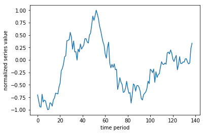
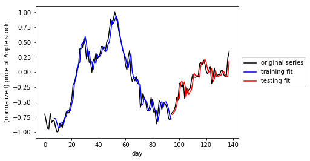

Artificial Intelligence Nanodegree
Recurrent Neural Network Projects
Welcome to the Recurrent Neural Network Project in the Artificial Intelligence Nanodegree! In this notebook, some template code has already been provided for you, and you will need to implement additional functionality to successfully complete this project. You will not need to modify the included code beyond what is requested. Sections that begin with 'Implementation' in the header indicate that the following block of code will require additional functionality which you must provide. Instructions will be provided for each section and the specifics of the implementation are marked in the code block with a 'TODO' statement. Please be sure to read the instructions carefully!
In addition to implementing code, there will be questions that you must answer which relate to the project and your implementation. Each section where you will answer a question is preceded by a 'Question X' header. Carefully read each question and provide thorough answers in the following text boxes that begin with 'Answer:'. Your project submission will be evaluated based on your answers to each of the questions and the implementation you provide.
Note: Code and Markdown cells can be executed using the Shift + Enter keyboard shortcut. In addition, Markdown cells can be edited by typically double-clicking the cell to enter edit mode.
Implementation TODOs in this notebook
This notebook contains two problems, cut into a variety of TODOs. Make sure to complete each section containing a TODO marker throughout the notebook. For convenience we provide links to each of these sections below.
TODO #1: Implement a function to window time series
TODO #2: Create a simple RNN model using keras to perform regression
TODO #3: Finish cleaning a large text corpus
TODO #4: Implement a function to window a large text corpus
TODO #5: Create a simple RNN model using keras to perform multiclass classification
TODO #6: Generate text using a fully trained RNN model and a variety of input sequences
Problem 1: Perform time series prediction
In this project you will perform time series prediction using a Recurrent Neural Network regressor. In particular you will re-create the figure shown in the notes - where the stock price of Apple was forecasted (or predicted) 7 days in advance. In completing this exercise you will learn how to construct RNNs using Keras, which will also aid in completing the second project in this notebook.
The particular network architecture we will employ for our RNN is known as Long Term Short Memory (LSTM), which helps significantly avoid technical problems with optimization of RNNs.
1.1 Getting started
First we must load in our time series - a history of around 140 days of Apple's stock price. Then we need to perform a number of pre-processing steps to prepare it for use with an RNN model. First off, it is good practice to normalize time series - by normalizing its range. This helps us avoid serious numerical issues associated how common activation functions (like tanh) transform very large (positive or negative) numbers, as well as helping us to avoid related issues when computing derivatives.
Here we normalize the series to lie in the range [0,1] using this scikit function, but it is also commonplace to normalize by a series standard deviation.
import seaborn as sns import pandas as pd
### Load in necessary libraries for data input and normalization %matplotlib inline import numpy as np import matplotlib.pyplot as plt %load_ext autoreload %autoreload 2 from my_answers import * %load_ext autoreload %autoreload 2 from my_answers import * ### load in and normalize the dataset dataset = np.loadtxt('datasets/normalized_apple_prices.csv')
The autoreload extension is already loaded. To reload it, use: %reload_ext autoreload The autoreload extension is already loaded. To reload it, use: %reload_ext autoreload
Lets take a quick look at the (normalized) time series we'll be performing predictions on.
# lets take a look at our time series #pd.DataFrame(dataset).plot() plt.plot(dataset) plt.xlabel('time period') plt.ylabel('normalized series value')
Text(0,0.5,u'normalized series value')

1.2 Cutting our time series into sequences
Remember, our time series is a sequence of numbers that we can represent in general mathematically as
$$s_{0},s_{1},s_{2},...,s_{P}$$
where $s_{p}$ is the numerical value of the time series at time period $p$ and where $P$ is the total length of the series. In order to apply our RNN we treat the time series prediction problem as a regression problem, and so need to use a sliding window to construct a set of associated input/output pairs to regress on. This process is animated in the gif below.

For example - using a window of size T = 5 (as illustrated in the gif above) we produce a set of input/output pairs like the one shown in the table below
$$\begin{array}{c|c} \text{Input} & \text{Output}\ \hline \color{CornflowerBlue} {\langle s_{1},s_{2},s_{3},s_{4},s_{5}\rangle} & \color{Goldenrod}{ s_{6}} \ \ \color{CornflowerBlue} {\langle s_{2},s_{3},s_{4},s_{5},s_{6} \rangle } & \color{Goldenrod} {s_{7} } \ \color{CornflowerBlue} {\vdots} & \color{Goldenrod} {\vdots}\ \color{CornflowerBlue} { \langle s_{P-5},s_{P-4},s_{P-3},s_{P-2},s_{P-1} \rangle } & \color{Goldenrod} {s_{P}} \end{array}$$
Notice here that each input is a sequence (or vector) of length 5 (and in general has length equal to the window size T) while each corresponding output is a scalar value. Notice also how given a time series of length P and window size T = 5 as shown above, we created P - 5 input/output pairs. More generally, for a window size T we create P - T such pairs.
Now its time for you to window the input time series as described above!
TODO: Implement the function called window_transform_series in my_answers.py so that it runs a sliding window along the input series and creates associated input/output pairs. Note that this function should input a) the series and b) the window length, and return the input/output subsequences. Make sure to format returned input/output as generally shown in table above (where window_size = 5), and make sure your returned input is a numpy array.
You can test your function on the list of odd numbers given below
odd_nums = np.array([1,3,5,7,9,11,13])
Here is a hard-coded solution for odd_nums. You can compare its results with what you get from your window_transform_series implementation.
# run a window of size 2 over the odd number sequence and display the results window_size = 2 X = [] X.append(odd_nums[0:2]) X.append(odd_nums[1:3]) X.append(odd_nums[2:4]) X.append(odd_nums[3:5]) X.append(odd_nums[4:6]) y = odd_nums[2:] X = np.asarray(X) y = np.asarray(y) y = np.reshape(y, (len(y),1)) #optional assert(type(X).__name__ == 'ndarray') assert(type(y).__name__ == 'ndarray') assert(X.shape == (5,2)) assert(y.shape in [(5,1), (5,)]) # print out input/output pairs --> here input = X, corresponding output = y print ('--- the input X will look like ----') print (X) print ('--- the associated output y will look like ----') print (y)
--- the input X will look like ---- [[ 1 3] [ 3 5] [ 5 7] [ 7 9] [ 9 11]] --- the associated output y will look like ---- [[ 5] [ 7] [ 9] [11] [13]]
Again - you can check that your completed window_transform_series function works correctly by trying it on the odd_nums sequence - you should get the above output.
### TODO: implement the function window_transform_series in the file my_answers.py from my_answers import window_transform_series
With this function in place apply it to the series in the Python cell below. We use a window_size = 7 for these experiments.
# window the data using your windowing function window_size = 7 X,y = window_transform_series(series = dataset, window_size = window_size)
X.shape,y.shape
((131, 7), (131, 1))
1.3 Splitting into training and testing sets
In order to perform proper testing on our dataset we will lop off the last 1/3 of it for validation (or testing). This is that once we train our model we have something to test it on (like any regression problem!). This splitting into training/testing sets is done in the cell below.
Note how here we are not splitting the dataset randomly as one typically would do when validating a regression model. This is because our input/output pairs are related temporally. We don't want to validate our model by training on a random subset of the series and then testing on another random subset, as this simulates the scenario that we receive new points within the timeframe of our training set.
We want to train on one solid chunk of the series (in our case, the first full 2/3 of it), and validate on a later chunk (the last 1/3) as this simulates how we would predict future values of a time series.
# split our dataset into training / testing sets train_test_split = int(np.ceil(2*len(y)/float(3))) # set the split point print(train_test_split) # partition the training set X_train = X[:train_test_split,:] y_train = y[:train_test_split] # keep the last chunk for testing X_test = X[train_test_split:,:] y_test = y[train_test_split:] # NOTE: to use keras's RNN LSTM module our input must be reshaped to [samples, window size, stepsize] X_train = np.asarray(np.reshape(X_train, (X_train.shape[0], window_size, 1))) X_test = np.asarray(np.reshape(X_test, (X_test.shape[0], window_size, 1)))
88
1.4 Build and run an RNN regression model
Having created input/output pairs out of our time series and cut this into training/testing sets, we can now begin setting up our RNN. We use Keras to quickly build a two hidden layer RNN of the following specifications
- layer 1 uses an LSTM module with 5 hidden units (note here the input_shape = (window_size,1))
- layer 2 uses a fully connected module with one unit
- the 'mean_squared_error' loss should be used (remember: we are performing regression here)
This can be constructed using just a few lines - see e.g., the general Keras documentation and the LSTM documentation in particular for examples of how to quickly use Keras to build neural network models. Make sure you are initializing your optimizer given the keras-recommended approach for RNNs
(given in the cell below). (remember to copy your completed function into the script my_answers.py function titled build_part1_RNN before submitting your project)
### TODO: create required RNN model # import keras network libraries from keras.models import Sequential from keras.layers import Dense from keras.layers import LSTM import keras # given - fix random seed - so we can all reproduce the same results on our default time series np.random.seed(0) # TODO: implement build_part1_RNN in my_answers.py from my_answers import build_part1_RNN model = build_part1_RNN(window_size) # build model using keras documentation recommended optimizer initialization optimizer = keras.optimizers.RMSprop(lr=0.001, rho=0.9, epsilon=1e-08, decay=0.0) # compile the model model.compile(loss='mean_squared_error', optimizer=optimizer)
With your model built you can now fit the model by activating the cell below! Note: the number of epochs (np_epochs) and batch_size are preset (so we can all produce the same results). You can choose to toggle the verbose parameter - which gives you regular updates on the progress of the algorithm - on and off by setting it to 1 or 0 respectively.
# run your model! model.fit(X_train, y_train, epochs=1000, batch_size=50, verbose=1)
Epoch 1/1000 88/88 [==============================] - 0s - loss: 0.0163 Epoch 2/1000 88/88 [==============================] - 0s - loss: 0.0163 Epoch 3/1000 88/88 [==============================] - 0s - loss: 0.0163 Epoch 4/1000 88/88 [==============================] - 0s - loss: 0.0163 Epoch 5/1000 88/88 [==============================] - 0s - loss: 0.0163 Epoch 6/1000 88/88 [==============================] - 0s - loss: 0.0163 Epoch 7/1000 88/88 [==============================] - 0s - loss: 0.0163 Epoch 8/1000 88/88 [==============================] - 0s - loss: 0.0165 Epoch 9/1000 88/88 [==============================] - 0s - loss: 0.0164 Epoch 10/1000 88/88 [==============================] - 0s - loss: 0.0163 Epoch 11/1000 88/88 [==============================] - 0s - loss: 0.0163 Epoch 12/1000 88/88 [==============================] - 0s - loss: 0.0163 Epoch 13/1000 88/88 [==============================] - 0s - loss: 0.0164 Epoch 14/1000 88/88 [==============================] - 0s - loss: 0.0164 Epoch 15/1000 88/88 [==============================] - 0s - loss: 0.0166 Epoch 16/1000 88/88 [==============================] - 0s - loss: 0.0163 Epoch 17/1000 88/88 [==============================] - 0s - loss: 0.0163 Epoch 18/1000 88/88 [==============================] - 0s - loss: 0.0163 Epoch 19/1000 88/88 [==============================] - 0s - loss: 0.0162 Epoch 20/1000 88/88 [==============================] - 0s - loss: 0.0163 Epoch 21/1000 88/88 [==============================] - 0s - loss: 0.0164 Epoch 22/1000 88/88 [==============================] - 0s - loss: 0.0162 Epoch 23/1000 88/88 [==============================] - 0s - loss: 0.0162 Epoch 24/1000 88/88 [==============================] - 0s - loss: 0.0163 Epoch 25/1000 88/88 [==============================] - 0s - loss: 0.0163 Epoch 26/1000 88/88 [==============================] - 0s - loss: 0.0164 Epoch 27/1000 88/88 [==============================] - 0s - loss: 0.0164 Epoch 28/1000 88/88 [==============================] - 0s - loss: 0.0163 Epoch 29/1000 88/88 [==============================] - 0s - loss: 0.0163 Epoch 30/1000 88/88 [==============================] - 0s - loss: 0.0163 Epoch 31/1000 88/88 [==============================] - 0s - loss: 0.0162 Epoch 32/1000 88/88 [==============================] - 0s - loss: 0.0162 Epoch 33/1000 88/88 [==============================] - 0s - loss: 0.0162 Epoch 34/1000 88/88 [==============================] - 0s - loss: 0.0162 Epoch 35/1000 88/88 [==============================] - 0s - loss: 0.0163 Epoch 36/1000 88/88 [==============================] - 0s - loss: 0.0165 Epoch 37/1000 88/88 [==============================] - 0s - loss: 0.0162 Epoch 38/1000 88/88 [==============================] - 0s - loss: 0.0163 Epoch 39/1000 88/88 [==============================] - 0s - loss: 0.0163 Epoch 40/1000 88/88 [==============================] - 0s - loss: 0.0163 Epoch 41/1000 88/88 [==============================] - 0s - loss: 0.0164 Epoch 42/1000 88/88 [==============================] - 0s - loss: 0.0162 Epoch 43/1000 88/88 [==============================] - 0s - loss: 0.0164 Epoch 44/1000 88/88 [==============================] - 0s - loss: 0.0164 Epoch 45/1000 88/88 [==============================] - 0s - loss: 0.0163 Epoch 46/1000 88/88 [==============================] - 0s - loss: 0.0162 Epoch 47/1000 88/88 [==============================] - 0s - loss: 0.0163 Epoch 48/1000 88/88 [==============================] - 0s - loss: 0.0164 Epoch 49/1000 88/88 [==============================] - 0s - loss: 0.0163 Epoch 50/1000 88/88 [==============================] - 0s - loss: 0.0165 Epoch 51/1000 88/88 [==============================] - 0s - loss: 0.0165 Epoch 52/1000 88/88 [==============================] - 0s - loss: 0.0163 Epoch 53/1000 88/88 [==============================] - 0s - loss: 0.0162 Epoch 54/1000 88/88 [==============================] - 0s - loss: 0.0163 Epoch 55/1000 88/88 [==============================] - 0s - loss: 0.0162 Epoch 56/1000 88/88 [==============================] - 0s - loss: 0.0163 Epoch 57/1000 88/88 [==============================] - 0s - loss: 0.0163 Epoch 58/1000 88/88 [==============================] - 0s - loss: 0.0162 Epoch 59/1000 88/88 [==============================] - 0s - loss: 0.0162 Epoch 60/1000 88/88 [==============================] - 0s - loss: 0.0162 Epoch 61/1000 88/88 [==============================] - 0s - loss: 0.0163 Epoch 62/1000 88/88 [==============================] - 0s - loss: 0.0162 Epoch 63/1000 88/88 [==============================] - 0s - loss: 0.0164 Epoch 64/1000 88/88 [==============================] - 0s - loss: 0.0163 Epoch 65/1000 88/88 [==============================] - 0s - loss: 0.0165 Epoch 66/1000 88/88 [==============================] - 0s - loss: 0.0162 Epoch 67/1000 88/88 [==============================] - 0s - loss: 0.0163 Epoch 68/1000 88/88 [==============================] - 0s - loss: 0.0163 Epoch 69/1000 88/88 [==============================] - 0s - loss: 0.0162 Epoch 70/1000 88/88 [==============================] - 0s - loss: 0.0162 Epoch 71/1000 88/88 [==============================] - 0s - loss: 0.0164 Epoch 72/1000 88/88 [==============================] - 0s - loss: 0.0164 Epoch 73/1000 88/88 [==============================] - 0s - loss: 0.0162 Epoch 74/1000 88/88 [==============================] - 0s - loss: 0.0162 Epoch 75/1000 88/88 [==============================] - 0s - loss: 0.0162 Epoch 76/1000 88/88 [==============================] - 0s - loss: 0.0163 Epoch 77/1000 88/88 [==============================] - 0s - loss: 0.0166 Epoch 78/1000 88/88 [==============================] - 0s - loss: 0.0163 Epoch 79/1000 88/88 [==============================] - 0s - loss: 0.0163 Epoch 80/1000 88/88 [==============================] - 0s - loss: 0.0162 Epoch 81/1000 88/88 [==============================] - 0s - loss: 0.0162 Epoch 82/1000 88/88 [==============================] - 0s - loss: 0.0162 Epoch 83/1000 88/88 [==============================] - 0s - loss: 0.0162 Epoch 84/1000 88/88 [==============================] - 0s - loss: 0.0162 Epoch 85/1000 88/88 [==============================] - 0s - loss: 0.0162 Epoch 86/1000 88/88 [==============================] - 0s - loss: 0.0162 Epoch 87/1000 88/88 [==============================] - 0s - loss: 0.0162 Epoch 88/1000 88/88 [==============================] - 0s - loss: 0.0162 Epoch 89/1000 88/88 [==============================] - 0s - loss: 0.0161 Epoch 90/1000 88/88 [==============================] - 0s - loss: 0.0163 Epoch 91/1000 88/88 [==============================] - 0s - loss: 0.0164 Epoch 92/1000 88/88 [==============================] - 0s - loss: 0.0162 Epoch 93/1000 88/88 [==============================] - 0s - loss: 0.0163 Epoch 94/1000 88/88 [==============================] - 0s - loss: 0.0164 Epoch 95/1000 88/88 [==============================] - 0s - loss: 0.0161 Epoch 96/1000 88/88 [==============================] - 0s - loss: 0.0162 Epoch 97/1000 88/88 [==============================] - 0s - loss: 0.0162 Epoch 98/1000 88/88 [==============================] - 0s - loss: 0.0163 Epoch 99/1000 88/88 [==============================] - 0s - loss: 0.0162 Epoch 100/1000 88/88 [==============================] - 0s - loss: 0.0162 Epoch 101/1000 88/88 [==============================] - ETA: 0s - loss: 0.016 - 0s - loss: 0.0163 Epoch 102/1000 88/88 [==============================] - 0s - loss: 0.0163 Epoch 103/1000 88/88 [==============================] - 0s - loss: 0.0163 Epoch 104/1000 88/88 [==============================] - ETA: 0s - loss: 0.016 - 0s - loss: 0.0161 Epoch 105/1000 88/88 [==============================] - 0s - loss: 0.0169 Epoch 106/1000 88/88 [==============================] - 0s - loss: 0.0162 Epoch 107/1000 88/88 [==============================] - 0s - loss: 0.0162 Epoch 108/1000 88/88 [==============================] - 0s - loss: 0.0162 Epoch 109/1000 88/88 [==============================] - 0s - loss: 0.0161 Epoch 110/1000 88/88 [==============================] - 0s - loss: 0.0161 Epoch 111/1000 88/88 [==============================] - 0s - loss: 0.0163 Epoch 112/1000 88/88 [==============================] - 0s - loss: 0.0162 Epoch 113/1000 88/88 [==============================] - 0s - loss: 0.0161 Epoch 114/1000 88/88 [==============================] - 0s - loss: 0.0162 Epoch 115/1000 88/88 [==============================] - 0s - loss: 0.0161 Epoch 116/1000 88/88 [==============================] - 0s - loss: 0.0164 Epoch 117/1000 88/88 [==============================] - 0s - loss: 0.0165 Epoch 118/1000 88/88 [==============================] - 0s - loss: 0.0162 Epoch 119/1000 88/88 [==============================] - 0s - loss: 0.0162 Epoch 120/1000 88/88 [==============================] - 0s - loss: 0.0161 Epoch 121/1000 88/88 [==============================] - 0s - loss: 0.0162 Epoch 122/1000 88/88 [==============================] - 0s - loss: 0.0162 Epoch 123/1000 88/88 [==============================] - 0s - loss: 0.0162 Epoch 124/1000 88/88 [==============================] - 0s - loss: 0.0162 Epoch 125/1000 88/88 [==============================] - 0s - loss: 0.0163 Epoch 126/1000 88/88 [==============================] - 0s - loss: 0.0161 Epoch 127/1000 88/88 [==============================] - 0s - loss: 0.0161 Epoch 128/1000 88/88 [==============================] - 0s - loss: 0.0162 Epoch 129/1000 88/88 [==============================] - 0s - loss: 0.0161 Epoch 130/1000 88/88 [==============================] - 0s - loss: 0.0163 Epoch 131/1000 88/88 [==============================] - 0s - loss: 0.0161 Epoch 132/1000 88/88 [==============================] - 0s - loss: 0.0162 Epoch 133/1000 88/88 [==============================] - 0s - loss: 0.0161 Epoch 134/1000 88/88 [==============================] - 0s - loss: 0.0161 Epoch 135/1000 88/88 [==============================] - 0s - loss: 0.0163 Epoch 136/1000 88/88 [==============================] - 0s - loss: 0.0163 Epoch 137/1000 88/88 [==============================] - ETA: 0s - loss: 0.017 - 0s - loss: 0.0161 Epoch 138/1000 88/88 [==============================] - 0s - loss: 0.0162 Epoch 139/1000 88/88 [==============================] - 0s - loss: 0.0166 Epoch 140/1000 88/88 [==============================] - 0s - loss: 0.0161 Epoch 141/1000 88/88 [==============================] - 0s - loss: 0.0161 Epoch 142/1000 88/88 [==============================] - 0s - loss: 0.0161 Epoch 143/1000 88/88 [==============================] - 0s - loss: 0.0162 Epoch 144/1000 88/88 [==============================] - 0s - loss: 0.0161 Epoch 145/1000 88/88 [==============================] - 0s - loss: 0.0167 Epoch 146/1000 88/88 [==============================] - 0s - loss: 0.0161 Epoch 147/1000 88/88 [==============================] - 0s - loss: 0.0163 Epoch 148/1000 88/88 [==============================] - 0s - loss: 0.0161 Epoch 149/1000 88/88 [==============================] - 0s - loss: 0.0163 Epoch 150/1000 88/88 [==============================] - 0s - loss: 0.0161 Epoch 151/1000 88/88 [==============================] - ETA: 0s - loss: 0.017 - 0s - loss: 0.0161 Epoch 152/1000 88/88 [==============================] - 0s - loss: 0.0161 Epoch 153/1000 88/88 [==============================] - 0s - loss: 0.0162 Epoch 154/1000 88/88 [==============================] - ETA: 0s - loss: 0.020 - 0s - loss: 0.0161 Epoch 155/1000 88/88 [==============================] - 0s - loss: 0.0161 Epoch 156/1000 88/88 [==============================] - 0s - loss: 0.0161 Epoch 157/1000 88/88 [==============================] - 0s - loss: 0.0161 Epoch 158/1000 88/88 [==============================] - 0s - loss: 0.0162 Epoch 159/1000 88/88 [==============================] - 0s - loss: 0.0161 Epoch 160/1000 88/88 [==============================] - 0s - loss: 0.0161 Epoch 161/1000 88/88 [==============================] - 0s - loss: 0.0162 Epoch 162/1000 88/88 [==============================] - 0s - loss: 0.0164 Epoch 163/1000 88/88 [==============================] - 0s - loss: 0.0161 Epoch 164/1000 88/88 [==============================] - 0s - loss: 0.0161 Epoch 165/1000 88/88 [==============================] - 0s - loss: 0.0161 Epoch 166/1000 88/88 [==============================] - 0s - loss: 0.0162 Epoch 167/1000 88/88 [==============================] - 0s - loss: 0.0163 Epoch 168/1000 88/88 [==============================] - 0s - loss: 0.0161 Epoch 169/1000 88/88 [==============================] - 0s - loss: 0.0161 Epoch 170/1000 88/88 [==============================] - 0s - loss: 0.0162 Epoch 171/1000 88/88 [==============================] - 0s - loss: 0.0161 Epoch 172/1000 88/88 [==============================] - ETA: 0s - loss: 0.015 - 0s - loss: 0.0161 Epoch 173/1000 88/88 [==============================] - 0s - loss: 0.0162 Epoch 174/1000 88/88 [==============================] - 0s - loss: 0.0161 Epoch 175/1000 88/88 [==============================] - 0s - loss: 0.0162 Epoch 176/1000 88/88 [==============================] - 0s - loss: 0.0162 Epoch 177/1000 88/88 [==============================] - 0s - loss: 0.0162 Epoch 178/1000 88/88 [==============================] - 0s - loss: 0.0161 Epoch 179/1000 88/88 [==============================] - 0s - loss: 0.0161 Epoch 180/1000 88/88 [==============================] - 0s - loss: 0.0160 Epoch 181/1000 88/88 [==============================] - 0s - loss: 0.0161 Epoch 182/1000 88/88 [==============================] - 0s - loss: 0.0161 Epoch 183/1000 88/88 [==============================] - 0s - loss: 0.0162 Epoch 184/1000 88/88 [==============================] - 0s - loss: 0.0161 Epoch 185/1000 88/88 [==============================] - 0s - loss: 0.0163 Epoch 186/1000 88/88 [==============================] - 0s - loss: 0.0161 Epoch 187/1000 88/88 [==============================] - 0s - loss: 0.0160 Epoch 188/1000 88/88 [==============================] - 0s - loss: 0.0161 Epoch 189/1000 88/88 [==============================] - 0s - loss: 0.0161 Epoch 190/1000 88/88 [==============================] - ETA: 0s - loss: 0.017 - 0s - loss: 0.0161 Epoch 191/1000 88/88 [==============================] - 0s - loss: 0.0161 Epoch 192/1000 88/88 [==============================] - 0s - loss: 0.0160 Epoch 193/1000 88/88 [==============================] - 0s - loss: 0.0169 Epoch 194/1000 88/88 [==============================] - 0s - loss: 0.0161 Epoch 195/1000 88/88 [==============================] - 0s - loss: 0.0161 Epoch 196/1000 88/88 [==============================] - 0s - loss: 0.0160 Epoch 197/1000 88/88 [==============================] - 0s - loss: 0.0161 Epoch 198/1000 88/88 [==============================] - 0s - loss: 0.0163 Epoch 199/1000 88/88 [==============================] - 0s - loss: 0.0161 Epoch 200/1000 88/88 [==============================] - 0s - loss: 0.0160 Epoch 201/1000 88/88 [==============================] - 0s - loss: 0.0162 Epoch 202/1000 88/88 [==============================] - 0s - loss: 0.0161 Epoch 203/1000 88/88 [==============================] - 0s - loss: 0.0161 Epoch 204/1000 88/88 [==============================] - 0s - loss: 0.0160 Epoch 205/1000 88/88 [==============================] - 0s - loss: 0.0161 Epoch 206/1000 88/88 [==============================] - 0s - loss: 0.0163 Epoch 207/1000 88/88 [==============================] - 0s - loss: 0.0162 Epoch 208/1000 88/88 [==============================] - ETA: 0s - loss: 0.014 - 0s - loss: 0.0162 Epoch 209/1000 88/88 [==============================] - ETA: 0s - loss: 0.019 - 0s - loss: 0.0160 Epoch 210/1000 88/88 [==============================] - 0s - loss: 0.0160 Epoch 211/1000 88/88 [==============================] - 0s - loss: 0.0161 Epoch 212/1000 88/88 [==============================] - 0s - loss: 0.0160 Epoch 213/1000 88/88 [==============================] - 0s - loss: 0.0160 Epoch 214/1000 88/88 [==============================] - 0s - loss: 0.0161 Epoch 215/1000 88/88 [==============================] - 0s - loss: 0.0163 Epoch 216/1000 88/88 [==============================] - 0s - loss: 0.0164 Epoch 217/1000 88/88 [==============================] - 0s - loss: 0.0160 Epoch 218/1000 88/88 [==============================] - 0s - loss: 0.0160 Epoch 219/1000 88/88 [==============================] - 0s - loss: 0.0160 Epoch 220/1000 88/88 [==============================] - 0s - loss: 0.0162 Epoch 221/1000 88/88 [==============================] - 0s - loss: 0.0160 Epoch 222/1000 88/88 [==============================] - 0s - loss: 0.0161 Epoch 223/1000 88/88 [==============================] - 0s - loss: 0.0165 Epoch 224/1000 88/88 [==============================] - 0s - loss: 0.0161 Epoch 225/1000 88/88 [==============================] - 0s - loss: 0.0161 Epoch 226/1000 88/88 [==============================] - 0s - loss: 0.0161 Epoch 227/1000 88/88 [==============================] - 0s - loss: 0.0163 Epoch 228/1000 88/88 [==============================] - 0s - loss: 0.0160 Epoch 229/1000 88/88 [==============================] - 0s - loss: 0.0160 Epoch 230/1000 88/88 [==============================] - ETA: 0s - loss: 0.013 - 0s - loss: 0.0161 Epoch 231/1000 88/88 [==============================] - 0s - loss: 0.0161 Epoch 232/1000 88/88 [==============================] - 0s - loss: 0.0160 Epoch 233/1000 88/88 [==============================] - 0s - loss: 0.0160 Epoch 234/1000 88/88 [==============================] - 0s - loss: 0.0160 Epoch 235/1000 88/88 [==============================] - 0s - loss: 0.0161 Epoch 236/1000 88/88 [==============================] - 0s - loss: 0.0161 Epoch 237/1000 88/88 [==============================] - 0s - loss: 0.0163 Epoch 238/1000 88/88 [==============================] - 0s - loss: 0.0160 Epoch 239/1000 88/88 [==============================] - 0s - loss: 0.0160 Epoch 240/1000 88/88 [==============================] - 0s - loss: 0.0165 Epoch 241/1000 88/88 [==============================] - 0s - loss: 0.0161 Epoch 242/1000 88/88 [==============================] - 0s - loss: 0.0160 Epoch 243/1000 88/88 [==============================] - 0s - loss: 0.0161 Epoch 244/1000 88/88 [==============================] - 0s - loss: 0.0160 Epoch 245/1000 88/88 [==============================] - 0s - loss: 0.0160 Epoch 246/1000 88/88 [==============================] - 0s - loss: 0.0161 Epoch 247/1000 88/88 [==============================] - 0s - loss: 0.0160 Epoch 248/1000 88/88 [==============================] - 0s - loss: 0.0162 Epoch 249/1000 88/88 [==============================] - 0s - loss: 0.0160 Epoch 250/1000 88/88 [==============================] - 0s - loss: 0.0160 Epoch 251/1000 88/88 [==============================] - 0s - loss: 0.0164 Epoch 252/1000 88/88 [==============================] - 0s - loss: 0.0160 Epoch 253/1000 88/88 [==============================] - 0s - loss: 0.0161 Epoch 254/1000 88/88 [==============================] - 0s - loss: 0.0160 Epoch 255/1000 88/88 [==============================] - 0s - loss: 0.0161 Epoch 256/1000 88/88 [==============================] - 0s - loss: 0.0162 Epoch 257/1000 88/88 [==============================] - 0s - loss: 0.0160 Epoch 258/1000 88/88 [==============================] - 0s - loss: 0.0160 Epoch 259/1000 88/88 [==============================] - ETA: 0s - loss: 0.013 - 0s - loss: 0.0160 Epoch 260/1000 88/88 [==============================] - 0s - loss: 0.0160 Epoch 261/1000 88/88 [==============================] - 0s - loss: 0.0161 Epoch 262/1000 88/88 [==============================] - 0s - loss: 0.0160 Epoch 263/1000 88/88 [==============================] - 0s - loss: 0.0160 Epoch 264/1000 88/88 [==============================] - 0s - loss: 0.0160 Epoch 265/1000 88/88 [==============================] - 0s - loss: 0.0161 Epoch 266/1000 88/88 [==============================] - 0s - loss: 0.0167 Epoch 267/1000 88/88 [==============================] - 0s - loss: 0.0160 Epoch 268/1000 88/88 [==============================] - 0s - loss: 0.0161 Epoch 269/1000 88/88 [==============================] - 0s - loss: 0.0160 Epoch 270/1000 88/88 [==============================] - 0s - loss: 0.0159 Epoch 271/1000 88/88 [==============================] - 0s - loss: 0.0162 Epoch 272/1000 88/88 [==============================] - 0s - loss: 0.0160 Epoch 273/1000 88/88 [==============================] - 0s - loss: 0.0159 Epoch 274/1000 88/88 [==============================] - 0s - loss: 0.0160 Epoch 275/1000 88/88 [==============================] - 0s - loss: 0.0162 Epoch 276/1000 88/88 [==============================] - 0s - loss: 0.0160 Epoch 277/1000 88/88 [==============================] - 0s - loss: 0.0161 Epoch 278/1000 88/88 [==============================] - 0s - loss: 0.0162 Epoch 279/1000 88/88 [==============================] - 0s - loss: 0.0159 Epoch 280/1000 88/88 [==============================] - 0s - loss: 0.0161 Epoch 281/1000 88/88 [==============================] - 0s - loss: 0.0160 Epoch 282/1000 88/88 [==============================] - 0s - loss: 0.0159 Epoch 283/1000 88/88 [==============================] - 0s - loss: 0.0160 Epoch 284/1000 88/88 [==============================] - 0s - loss: 0.0159 Epoch 285/1000 88/88 [==============================] - 0s - loss: 0.0159 Epoch 286/1000 88/88 [==============================] - 0s - loss: 0.0160 Epoch 287/1000 88/88 [==============================] - 0s - loss: 0.0162 Epoch 288/1000 88/88 [==============================] - 0s - loss: 0.0161 Epoch 289/1000 88/88 [==============================] - 0s - loss: 0.0162 Epoch 290/1000 88/88 [==============================] - 0s - loss: 0.0159 Epoch 291/1000 88/88 [==============================] - 0s - loss: 0.0159 Epoch 292/1000 88/88 [==============================] - 0s - loss: 0.0160 Epoch 293/1000 88/88 [==============================] - 0s - loss: 0.0159 Epoch 294/1000 88/88 [==============================] - 0s - loss: 0.0160 Epoch 295/1000 88/88 [==============================] - 0s - loss: 0.0160 Epoch 296/1000 88/88 [==============================] - 0s - loss: 0.0160 Epoch 297/1000 88/88 [==============================] - 0s - loss: 0.0161 Epoch 298/1000 88/88 [==============================] - 0s - loss: 0.0160 Epoch 299/1000 88/88 [==============================] - 0s - loss: 0.0160 Epoch 300/1000 88/88 [==============================] - 0s - loss: 0.0159 Epoch 301/1000 88/88 [==============================] - 0s - loss: 0.0161 Epoch 302/1000 88/88 [==============================] - 0s - loss: 0.0159 Epoch 303/1000 88/88 [==============================] - 0s - loss: 0.0159 Epoch 304/1000 88/88 [==============================] - 0s - loss: 0.0162 Epoch 305/1000 88/88 [==============================] - 0s - loss: 0.0159 Epoch 306/1000 88/88 [==============================] - 0s - loss: 0.0160 Epoch 307/1000 88/88 [==============================] - 0s - loss: 0.0160 Epoch 308/1000 88/88 [==============================] - 0s - loss: 0.0159 Epoch 309/1000 88/88 [==============================] - 0s - loss: 0.0160 Epoch 310/1000 88/88 [==============================] - 0s - loss: 0.0159 Epoch 311/1000 88/88 [==============================] - 0s - loss: 0.0159 Epoch 312/1000 88/88 [==============================] - 0s - loss: 0.0159 Epoch 313/1000 88/88 [==============================] - 0s - loss: 0.0159 Epoch 314/1000 88/88 [==============================] - 0s - loss: 0.0159 Epoch 315/1000 88/88 [==============================] - 0s - loss: 0.0162 Epoch 316/1000 88/88 [==============================] - 0s - loss: 0.0160 Epoch 317/1000 88/88 [==============================] - ETA: 0s - loss: 0.012 - 0s - loss: 0.0161 Epoch 318/1000 88/88 [==============================] - 0s - loss: 0.0162 Epoch 319/1000 88/88 [==============================] - 0s - loss: 0.0161 Epoch 320/1000 88/88 [==============================] - 0s - loss: 0.0159 Epoch 321/1000 88/88 [==============================] - 0s - loss: 0.0160 Epoch 322/1000 88/88 [==============================] - 0s - loss: 0.0159 Epoch 323/1000 88/88 [==============================] - 0s - loss: 0.0159 Epoch 324/1000 88/88 [==============================] - 0s - loss: 0.0160 Epoch 325/1000 88/88 [==============================] - 0s - loss: 0.0162 Epoch 326/1000 88/88 [==============================] - 0s - loss: 0.0164 Epoch 327/1000 88/88 [==============================] - 0s - loss: 0.0160 Epoch 328/1000 88/88 [==============================] - 0s - loss: 0.0159 Epoch 329/1000 88/88 [==============================] - 0s - loss: 0.0159 Epoch 330/1000 88/88 [==============================] - 0s - loss: 0.0159 Epoch 331/1000 88/88 [==============================] - 0s - loss: 0.0159 Epoch 332/1000 88/88 [==============================] - 0s - loss: 0.0159 Epoch 333/1000 88/88 [==============================] - 0s - loss: 0.0160 Epoch 334/1000 88/88 [==============================] - 0s - loss: 0.0163 Epoch 335/1000 88/88 [==============================] - 0s - loss: 0.0159 Epoch 336/1000 88/88 [==============================] - 0s - loss: 0.0159 Epoch 337/1000 88/88 [==============================] - 0s - loss: 0.0159 Epoch 338/1000 88/88 [==============================] - 0s - loss: 0.0159 Epoch 339/1000 88/88 [==============================] - 0s - loss: 0.0159 Epoch 340/1000 88/88 [==============================] - 0s - loss: 0.0160 Epoch 341/1000 88/88 [==============================] - 0s - loss: 0.0159 Epoch 342/1000 88/88 [==============================] - 0s - loss: 0.0163 Epoch 343/1000 88/88 [==============================] - 0s - loss: 0.0161 Epoch 344/1000 88/88 [==============================] - 0s - loss: 0.0159 Epoch 345/1000 88/88 [==============================] - 0s - loss: 0.0161 Epoch 346/1000 88/88 [==============================] - 0s - loss: 0.0159 Epoch 347/1000 88/88 [==============================] - 0s - loss: 0.0163 Epoch 348/1000 88/88 [==============================] - 0s - loss: 0.0159 Epoch 349/1000 88/88 [==============================] - 0s - loss: 0.0159 Epoch 350/1000 88/88 [==============================] - 0s - loss: 0.0160 Epoch 351/1000 88/88 [==============================] - 0s - loss: 0.0159 Epoch 352/1000 88/88 [==============================] - 0s - loss: 0.0161 Epoch 353/1000 88/88 [==============================] - 0s - loss: 0.0159 Epoch 354/1000 88/88 [==============================] - 0s - loss: 0.0160 Epoch 355/1000 88/88 [==============================] - 0s - loss: 0.0159 Epoch 356/1000 88/88 [==============================] - 0s - loss: 0.0159 Epoch 357/1000 88/88 [==============================] - 0s - loss: 0.0160 Epoch 358/1000 88/88 [==============================] - 0s - loss: 0.0159 Epoch 359/1000 88/88 [==============================] - 0s - loss: 0.0159 Epoch 360/1000 88/88 [==============================] - 0s - loss: 0.0163 Epoch 361/1000 88/88 [==============================] - 0s - loss: 0.0159 Epoch 362/1000 88/88 [==============================] - 0s - loss: 0.0159 Epoch 363/1000 88/88 [==============================] - 0s - loss: 0.0160 Epoch 364/1000 88/88 [==============================] - 0s - loss: 0.0159 Epoch 365/1000 88/88 [==============================] - 0s - loss: 0.0159 Epoch 366/1000 88/88 [==============================] - 0s - loss: 0.0160 Epoch 367/1000 88/88 [==============================] - 0s - loss: 0.0164 Epoch 368/1000 88/88 [==============================] - 0s - loss: 0.0160 Epoch 369/1000 88/88 [==============================] - 0s - loss: 0.0160 Epoch 370/1000 88/88 [==============================] - 0s - loss: 0.0158 Epoch 371/1000 88/88 [==============================] - 0s - loss: 0.0158 Epoch 372/1000 88/88 [==============================] - 0s - loss: 0.0160 Epoch 373/1000 88/88 [==============================] - 0s - loss: 0.0159 Epoch 374/1000 88/88 [==============================] - 0s - loss: 0.0158 Epoch 375/1000 88/88 [==============================] - 0s - loss: 0.0159 Epoch 376/1000 88/88 [==============================] - 0s - loss: 0.0161 Epoch 377/1000 88/88 [==============================] - 0s - loss: 0.0159 Epoch 378/1000 88/88 [==============================] - 0s - loss: 0.0159 Epoch 379/1000 88/88 [==============================] - 0s - loss: 0.0160 Epoch 380/1000 88/88 [==============================] - 0s - loss: 0.0158 Epoch 381/1000 88/88 [==============================] - 0s - loss: 0.0162 Epoch 382/1000 88/88 [==============================] - 0s - loss: 0.0158 Epoch 383/1000 88/88 [==============================] - 0s - loss: 0.0160 Epoch 384/1000 88/88 [==============================] - 0s - loss: 0.0159 Epoch 385/1000 88/88 [==============================] - 0s - loss: 0.0159 Epoch 386/1000 88/88 [==============================] - 0s - loss: 0.0162 Epoch 387/1000 88/88 [==============================] - 0s - loss: 0.0160 Epoch 388/1000 88/88 [==============================] - 0s - loss: 0.0160 Epoch 389/1000 88/88 [==============================] - 0s - loss: 0.0158 Epoch 390/1000 88/88 [==============================] - 0s - loss: 0.0162 Epoch 391/1000 88/88 [==============================] - 0s - loss: 0.0161 Epoch 392/1000 88/88 [==============================] - 0s - loss: 0.0159 Epoch 393/1000 88/88 [==============================] - 0s - loss: 0.0158 Epoch 394/1000 88/88 [==============================] - 0s - loss: 0.0159 Epoch 395/1000 88/88 [==============================] - 0s - loss: 0.0159 Epoch 396/1000 88/88 [==============================] - 0s - loss: 0.0159 Epoch 397/1000 88/88 [==============================] - 0s - loss: 0.0160 Epoch 398/1000 88/88 [==============================] - 0s - loss: 0.0163 Epoch 399/1000 88/88 [==============================] - 0s - loss: 0.0158 Epoch 400/1000 88/88 [==============================] - 0s - loss: 0.0160 Epoch 401/1000 88/88 [==============================] - 0s - loss: 0.0158 Epoch 402/1000 88/88 [==============================] - 0s - loss: 0.0163 Epoch 403/1000 88/88 [==============================] - 0s - loss: 0.0160 Epoch 404/1000 88/88 [==============================] - 0s - loss: 0.0159 Epoch 405/1000 88/88 [==============================] - 0s - loss: 0.0159 Epoch 406/1000 88/88 [==============================] - 0s - loss: 0.0158 Epoch 407/1000 88/88 [==============================] - 0s - loss: 0.0158 Epoch 408/1000 88/88 [==============================] - 0s - loss: 0.0158 Epoch 409/1000 88/88 [==============================] - 0s - loss: 0.0158 Epoch 410/1000 88/88 [==============================] - 0s - loss: 0.0159 Epoch 411/1000 88/88 [==============================] - 0s - loss: 0.0159 Epoch 412/1000 88/88 [==============================] - 0s - loss: 0.0161 Epoch 413/1000 88/88 [==============================] - 0s - loss: 0.0159 Epoch 414/1000 88/88 [==============================] - 0s - loss: 0.0158 Epoch 415/1000 88/88 [==============================] - 0s - loss: 0.0162 Epoch 416/1000 88/88 [==============================] - 0s - loss: 0.0160 Epoch 417/1000 88/88 [==============================] - 0s - loss: 0.0159 Epoch 418/1000 88/88 [==============================] - 0s - loss: 0.0159 Epoch 419/1000 88/88 [==============================] - 0s - loss: 0.0159 Epoch 420/1000 88/88 [==============================] - 0s - loss: 0.0158 Epoch 421/1000 88/88 [==============================] - 0s - loss: 0.0159 Epoch 422/1000 88/88 [==============================] - 0s - loss: 0.0160 Epoch 423/1000 88/88 [==============================] - 0s - loss: 0.0158 Epoch 424/1000 88/88 [==============================] - 0s - loss: 0.0160 Epoch 425/1000 88/88 [==============================] - 0s - loss: 0.0160 Epoch 426/1000 88/88 [==============================] - ETA: 0s - loss: 0.017 - 0s - loss: 0.0159 Epoch 427/1000 88/88 [==============================] - 0s - loss: 0.0160 Epoch 428/1000 88/88 [==============================] - 0s - loss: 0.0159 Epoch 429/1000 88/88 [==============================] - 0s - loss: 0.0158 Epoch 430/1000 88/88 [==============================] - 0s - loss: 0.0158 Epoch 431/1000 88/88 [==============================] - 0s - loss: 0.0159 Epoch 432/1000 88/88 [==============================] - 0s - loss: 0.0159 Epoch 433/1000 88/88 [==============================] - 0s - loss: 0.0161 Epoch 434/1000 88/88 [==============================] - 0s - loss: 0.0158 Epoch 435/1000 88/88 [==============================] - 0s - loss: 0.0158 Epoch 436/1000 88/88 [==============================] - 0s - loss: 0.0158 Epoch 437/1000 88/88 [==============================] - 0s - loss: 0.0161 Epoch 438/1000 88/88 [==============================] - 0s - loss: 0.0160 Epoch 439/1000 88/88 [==============================] - 0s - loss: 0.0159 Epoch 440/1000 88/88 [==============================] - 0s - loss: 0.0160 Epoch 441/1000 88/88 [==============================] - 0s - loss: 0.0158 Epoch 442/1000 88/88 [==============================] - ETA: 0s - loss: 0.013 - 0s - loss: 0.0160 Epoch 443/1000 88/88 [==============================] - 0s - loss: 0.0159 Epoch 444/1000 88/88 [==============================] - 0s - loss: 0.0158 Epoch 445/1000 88/88 [==============================] - 0s - loss: 0.0158 Epoch 446/1000 88/88 [==============================] - 0s - loss: 0.0161 Epoch 447/1000 88/88 [==============================] - 0s - loss: 0.0158 Epoch 448/1000 88/88 [==============================] - 0s - loss: 0.0158 Epoch 449/1000 88/88 [==============================] - 0s - loss: 0.0158 Epoch 450/1000 88/88 [==============================] - 0s - loss: 0.0161 Epoch 451/1000 88/88 [==============================] - 0s - loss: 0.0160 Epoch 452/1000 88/88 [==============================] - 0s - loss: 0.0159 Epoch 453/1000 88/88 [==============================] - 0s - loss: 0.0159 Epoch 454/1000 88/88 [==============================] - 0s - loss: 0.0158 Epoch 455/1000 88/88 [==============================] - 0s - loss: 0.0158 Epoch 456/1000 88/88 [==============================] - 0s - loss: 0.0158 Epoch 457/1000 88/88 [==============================] - 0s - loss: 0.0158 Epoch 458/1000 88/88 [==============================] - 0s - loss: 0.0158 Epoch 459/1000 88/88 [==============================] - 0s - loss: 0.0158 Epoch 460/1000 88/88 [==============================] - 0s - loss: 0.0159 Epoch 461/1000 88/88 [==============================] - 0s - loss: 0.0160 Epoch 462/1000 88/88 [==============================] - 0s - loss: 0.0159 Epoch 463/1000 88/88 [==============================] - 0s - loss: 0.0158 Epoch 464/1000 88/88 [==============================] - 0s - loss: 0.0158 Epoch 465/1000 88/88 [==============================] - 0s - loss: 0.0160 Epoch 466/1000 88/88 [==============================] - 0s - loss: 0.0159 Epoch 467/1000 88/88 [==============================] - 0s - loss: 0.0159 Epoch 468/1000 88/88 [==============================] - 0s - loss: 0.0158 Epoch 469/1000 88/88 [==============================] - 0s - loss: 0.0157 Epoch 470/1000 88/88 [==============================] - 0s - loss: 0.0158 Epoch 471/1000 88/88 [==============================] - 0s - loss: 0.0159 Epoch 472/1000 88/88 [==============================] - 0s - loss: 0.0158 Epoch 473/1000 88/88 [==============================] - 0s - loss: 0.0157 Epoch 474/1000 88/88 [==============================] - 0s - loss: 0.0159 Epoch 475/1000 88/88 [==============================] - 0s - loss: 0.0160 Epoch 476/1000 88/88 [==============================] - 0s - loss: 0.0158 Epoch 477/1000 88/88 [==============================] - 0s - loss: 0.0158 Epoch 478/1000 88/88 [==============================] - 0s - loss: 0.0160 Epoch 479/1000 88/88 [==============================] - 0s - loss: 0.0163 Epoch 480/1000 88/88 [==============================] - 0s - loss: 0.0159 Epoch 481/1000 88/88 [==============================] - 0s - loss: 0.0158 Epoch 482/1000 88/88 [==============================] - 0s - loss: 0.0158 Epoch 483/1000 88/88 [==============================] - 0s - loss: 0.0159 Epoch 484/1000 88/88 [==============================] - 0s - loss: 0.0159 Epoch 485/1000 88/88 [==============================] - 0s - loss: 0.0161 Epoch 486/1000 88/88 [==============================] - 0s - loss: 0.0158 Epoch 487/1000 88/88 [==============================] - 0s - loss: 0.0157 Epoch 488/1000 88/88 [==============================] - 0s - loss: 0.0157 Epoch 489/1000 88/88 [==============================] - 0s - loss: 0.0157 Epoch 490/1000 88/88 [==============================] - 0s - loss: 0.0158 Epoch 491/1000 88/88 [==============================] - 0s - loss: 0.0160 Epoch 492/1000 88/88 [==============================] - 0s - loss: 0.0161 Epoch 493/1000 88/88 [==============================] - 0s - loss: 0.0157 Epoch 494/1000 88/88 [==============================] - 0s - loss: 0.0158 Epoch 495/1000 88/88 [==============================] - 0s - loss: 0.0159 Epoch 496/1000 88/88 [==============================] - 0s - loss: 0.0158 Epoch 497/1000 88/88 [==============================] - 0s - loss: 0.0160 Epoch 498/1000 88/88 [==============================] - 0s - loss: 0.0158 Epoch 499/1000 88/88 [==============================] - 0s - loss: 0.0158 Epoch 500/1000 88/88 [==============================] - 0s - loss: 0.0158 Epoch 501/1000 88/88 [==============================] - 0s - loss: 0.0158 Epoch 502/1000 88/88 [==============================] - 0s - loss: 0.0159 Epoch 503/1000 88/88 [==============================] - 0s - loss: 0.0158 Epoch 504/1000 88/88 [==============================] - 0s - loss: 0.0158 Epoch 505/1000 88/88 [==============================] - 0s - loss: 0.0157 Epoch 506/1000 88/88 [==============================] - 0s - loss: 0.0162 Epoch 507/1000 88/88 [==============================] - 0s - loss: 0.0157 Epoch 508/1000 88/88 [==============================] - 0s - loss: 0.0158 Epoch 509/1000 88/88 [==============================] - 0s - loss: 0.0157 Epoch 510/1000 88/88 [==============================] - 0s - loss: 0.0158 Epoch 511/1000 88/88 [==============================] - 0s - loss: 0.0159 Epoch 512/1000 88/88 [==============================] - 0s - loss: 0.0157 Epoch 513/1000 88/88 [==============================] - 0s - loss: 0.0158 Epoch 514/1000 88/88 [==============================] - 0s - loss: 0.0159 Epoch 515/1000 88/88 [==============================] - 0s - loss: 0.0159 Epoch 516/1000 88/88 [==============================] - 0s - loss: 0.0157 Epoch 517/1000 88/88 [==============================] - 0s - loss: 0.0159 Epoch 518/1000 88/88 [==============================] - 0s - loss: 0.0158 Epoch 519/1000 88/88 [==============================] - 0s - loss: 0.0159 Epoch 520/1000 88/88 [==============================] - 0s - loss: 0.0157 Epoch 521/1000 88/88 [==============================] - 0s - loss: 0.0158 Epoch 522/1000 88/88 [==============================] - 0s - loss: 0.0157 Epoch 523/1000 88/88 [==============================] - 0s - loss: 0.0159 Epoch 524/1000 88/88 [==============================] - 0s - loss: 0.0158 Epoch 525/1000 88/88 [==============================] - 0s - loss: 0.0158 Epoch 526/1000 88/88 [==============================] - 0s - loss: 0.0161 Epoch 527/1000 88/88 [==============================] - 0s - loss: 0.0159 Epoch 528/1000 88/88 [==============================] - 0s - loss: 0.0161 Epoch 529/1000 88/88 [==============================] - 0s - loss: 0.0157 Epoch 530/1000 88/88 [==============================] - 0s - loss: 0.0158 Epoch 531/1000 88/88 [==============================] - 0s - loss: 0.0163 Epoch 532/1000 88/88 [==============================] - 0s - loss: 0.0158 Epoch 533/1000 88/88 [==============================] - 0s - loss: 0.0157 Epoch 534/1000 88/88 [==============================] - 0s - loss: 0.0157 Epoch 535/1000 88/88 [==============================] - 0s - loss: 0.0157 Epoch 536/1000 88/88 [==============================] - 0s - loss: 0.0157 Epoch 537/1000 88/88 [==============================] - 0s - loss: 0.0158 Epoch 538/1000 88/88 [==============================] - 0s - loss: 0.0157 Epoch 539/1000 88/88 [==============================] - 0s - loss: 0.0157 Epoch 540/1000 88/88 [==============================] - 0s - loss: 0.0159 Epoch 541/1000 88/88 [==============================] - 0s - loss: 0.0157 Epoch 542/1000 88/88 [==============================] - 0s - loss: 0.0157 Epoch 543/1000 88/88 [==============================] - 0s - loss: 0.0157 Epoch 544/1000 88/88 [==============================] - 0s - loss: 0.0158 Epoch 545/1000 88/88 [==============================] - 0s - loss: 0.0157 Epoch 546/1000 88/88 [==============================] - 0s - loss: 0.0158 Epoch 547/1000 88/88 [==============================] - 0s - loss: 0.0157 Epoch 548/1000 88/88 [==============================] - 0s - loss: 0.0159 Epoch 549/1000 88/88 [==============================] - 0s - loss: 0.0158 Epoch 550/1000 88/88 [==============================] - 0s - loss: 0.0157 Epoch 551/1000 88/88 [==============================] - 0s - loss: 0.0157 Epoch 552/1000 88/88 [==============================] - 0s - loss: 0.0157 Epoch 553/1000 88/88 [==============================] - 0s - loss: 0.0157 Epoch 554/1000 88/88 [==============================] - 0s - loss: 0.0160 Epoch 555/1000 88/88 [==============================] - 0s - loss: 0.0159 Epoch 556/1000 88/88 [==============================] - 0s - loss: 0.0159 Epoch 557/1000 88/88 [==============================] - 0s - loss: 0.0158 Epoch 558/1000 88/88 [==============================] - 0s - loss: 0.0158 Epoch 559/1000 88/88 [==============================] - 0s - loss: 0.0156 Epoch 560/1000 88/88 [==============================] - 0s - loss: 0.0157 Epoch 561/1000 88/88 [==============================] - 0s - loss: 0.0159 Epoch 562/1000 88/88 [==============================] - 0s - loss: 0.0158 Epoch 563/1000 88/88 [==============================] - 0s - loss: 0.0157 Epoch 564/1000 88/88 [==============================] - 0s - loss: 0.0159 Epoch 565/1000 88/88 [==============================] - 0s - loss: 0.0156 Epoch 566/1000 88/88 [==============================] - 0s - loss: 0.0158 Epoch 567/1000 88/88 [==============================] - 0s - loss: 0.0159 Epoch 568/1000 88/88 [==============================] - 0s - loss: 0.0159 Epoch 569/1000 88/88 [==============================] - 0s - loss: 0.0158 Epoch 570/1000 88/88 [==============================] - 0s - loss: 0.0157 Epoch 571/1000 88/88 [==============================] - 0s - loss: 0.0156 Epoch 572/1000 88/88 [==============================] - 0s - loss: 0.0157 Epoch 573/1000 88/88 [==============================] - 0s - loss: 0.0158 Epoch 574/1000 88/88 [==============================] - 0s - loss: 0.0157 Epoch 575/1000 88/88 [==============================] - 0s - loss: 0.0156 Epoch 576/1000 88/88 [==============================] - 0s - loss: 0.0158 Epoch 577/1000 88/88 [==============================] - 0s - loss: 0.0157 Epoch 578/1000 88/88 [==============================] - 0s - loss: 0.0157 Epoch 579/1000 88/88 [==============================] - 0s - loss: 0.0162 Epoch 580/1000 88/88 [==============================] - 0s - loss: 0.0158 Epoch 581/1000 88/88 [==============================] - 0s - loss: 0.0157 Epoch 582/1000 88/88 [==============================] - 0s - loss: 0.0156 Epoch 583/1000 88/88 [==============================] - 0s - loss: 0.0156 Epoch 584/1000 88/88 [==============================] - 0s - loss: 0.0156 Epoch 585/1000 88/88 [==============================] - 0s - loss: 0.0156 Epoch 586/1000 88/88 [==============================] - 0s - loss: 0.0156 Epoch 587/1000 88/88 [==============================] - 0s - loss: 0.0156 Epoch 588/1000 88/88 [==============================] - 0s - loss: 0.0157 Epoch 589/1000 88/88 [==============================] - 0s - loss: 0.0158 Epoch 590/1000 88/88 [==============================] - 0s - loss: 0.0157 Epoch 591/1000 88/88 [==============================] - 0s - loss: 0.0157 Epoch 592/1000 88/88 [==============================] - 0s - loss: 0.0156 Epoch 593/1000 88/88 [==============================] - 0s - loss: 0.0156 Epoch 594/1000 88/88 [==============================] - 0s - loss: 0.0156 Epoch 595/1000 88/88 [==============================] - 0s - loss: 0.0157 Epoch 596/1000 88/88 [==============================] - 0s - loss: 0.0158 Epoch 597/1000 88/88 [==============================] - 0s - loss: 0.0157 Epoch 598/1000 88/88 [==============================] - 0s - loss: 0.0156 Epoch 599/1000 88/88 [==============================] - 0s - loss: 0.0159 Epoch 600/1000 88/88 [==============================] - 0s - loss: 0.0159 Epoch 601/1000 88/88 [==============================] - 0s - loss: 0.0157 Epoch 602/1000 88/88 [==============================] - 0s - loss: 0.0156 Epoch 603/1000 88/88 [==============================] - 0s - loss: 0.0157 Epoch 604/1000 88/88 [==============================] - 0s - loss: 0.0157 Epoch 605/1000 88/88 [==============================] - 0s - loss: 0.0156 Epoch 606/1000 88/88 [==============================] - 0s - loss: 0.0159 Epoch 607/1000 88/88 [==============================] - 0s - loss: 0.0156 Epoch 608/1000 88/88 [==============================] - 0s - loss: 0.0156 Epoch 609/1000 88/88 [==============================] - 0s - loss: 0.0159 Epoch 610/1000 88/88 [==============================] - 0s - loss: 0.0156 Epoch 611/1000 88/88 [==============================] - ETA: 0s - loss: 0.016 - 0s - loss: 0.0156 Epoch 612/1000 88/88 [==============================] - 0s - loss: 0.0157 Epoch 613/1000 88/88 [==============================] - 0s - loss: 0.0158 Epoch 614/1000 88/88 [==============================] - 0s - loss: 0.0156 Epoch 615/1000 88/88 [==============================] - 0s - loss: 0.0156 Epoch 616/1000 88/88 [==============================] - 0s - loss: 0.0157 Epoch 617/1000 88/88 [==============================] - 0s - loss: 0.0158 Epoch 618/1000 88/88 [==============================] - 0s - loss: 0.0160 Epoch 619/1000 88/88 [==============================] - 0s - loss: 0.0156 Epoch 620/1000 88/88 [==============================] - 0s - loss: 0.0156 Epoch 621/1000 88/88 [==============================] - 0s - loss: 0.0156 Epoch 622/1000 88/88 [==============================] - 0s - loss: 0.0156 Epoch 623/1000 88/88 [==============================] - 0s - loss: 0.0156 Epoch 624/1000 88/88 [==============================] - 0s - loss: 0.0156 Epoch 625/1000 88/88 [==============================] - 0s - loss: 0.0157 Epoch 626/1000 88/88 [==============================] - 0s - loss: 0.0158 Epoch 627/1000 88/88 [==============================] - 0s - loss: 0.0156 Epoch 628/1000 88/88 [==============================] - 0s - loss: 0.0160 Epoch 629/1000 88/88 [==============================] - 0s - loss: 0.0158 Epoch 630/1000 88/88 [==============================] - 0s - loss: 0.0159 Epoch 631/1000 88/88 [==============================] - 0s - loss: 0.0156 Epoch 632/1000 88/88 [==============================] - 0s - loss: 0.0156 Epoch 633/1000 88/88 [==============================] - 0s - loss: 0.0156 Epoch 634/1000 88/88 [==============================] - 0s - loss: 0.0156 Epoch 635/1000 88/88 [==============================] - 0s - loss: 0.0156 Epoch 636/1000 88/88 [==============================] - 0s - loss: 0.0157 Epoch 637/1000 88/88 [==============================] - 0s - loss: 0.0158 Epoch 638/1000 88/88 [==============================] - 0s - loss: 0.0156 Epoch 639/1000 88/88 [==============================] - 0s - loss: 0.0156 Epoch 640/1000 88/88 [==============================] - 0s - loss: 0.0158 Epoch 641/1000 88/88 [==============================] - 0s - loss: 0.0159 Epoch 642/1000 88/88 [==============================] - 0s - loss: 0.0156 Epoch 643/1000 88/88 [==============================] - 0s - loss: 0.0156 Epoch 644/1000 88/88 [==============================] - 0s - loss: 0.0158 Epoch 645/1000 88/88 [==============================] - 0s - loss: 0.0156 Epoch 646/1000 88/88 [==============================] - 0s - loss: 0.0160 Epoch 647/1000 88/88 [==============================] - 0s - loss: 0.0157 Epoch 648/1000 88/88 [==============================] - 0s - loss: 0.0159 Epoch 649/1000 88/88 [==============================] - 0s - loss: 0.0157 Epoch 650/1000 88/88 [==============================] - 0s - loss: 0.0156 Epoch 651/1000 88/88 [==============================] - 0s - loss: 0.0157 Epoch 652/1000 88/88 [==============================] - 0s - loss: 0.0156 Epoch 653/1000 88/88 [==============================] - 0s - loss: 0.0156 Epoch 654/1000 88/88 [==============================] - 0s - loss: 0.0156 Epoch 655/1000 88/88 [==============================] - 0s - loss: 0.0156 Epoch 656/1000 88/88 [==============================] - 0s - loss: 0.0156 Epoch 657/1000 88/88 [==============================] - 0s - loss: 0.0155 Epoch 658/1000 88/88 [==============================] - 0s - loss: 0.0156 Epoch 659/1000 88/88 [==============================] - 0s - loss: 0.0155 Epoch 660/1000 88/88 [==============================] - 0s - loss: 0.0157 Epoch 661/1000 88/88 [==============================] - 0s - loss: 0.0155 Epoch 662/1000 88/88 [==============================] - 0s - loss: 0.0160 Epoch 663/1000 88/88 [==============================] - 0s - loss: 0.0155 Epoch 664/1000 88/88 [==============================] - 0s - loss: 0.0156 Epoch 665/1000 88/88 [==============================] - 0s - loss: 0.0157 Epoch 666/1000 88/88 [==============================] - 0s - loss: 0.0156 Epoch 667/1000 88/88 [==============================] - 0s - loss: 0.0158 Epoch 668/1000 88/88 [==============================] - 0s - loss: 0.0157 Epoch 669/1000 88/88 [==============================] - 0s - loss: 0.0156 Epoch 670/1000 88/88 [==============================] - 0s - loss: 0.0157 Epoch 671/1000 88/88 [==============================] - 0s - loss: 0.0156 Epoch 672/1000 88/88 [==============================] - ETA: 0s - loss: 0.014 - 0s - loss: 0.0156 Epoch 673/1000 88/88 [==============================] - 0s - loss: 0.0156 Epoch 674/1000 88/88 [==============================] - 0s - loss: 0.0156 Epoch 675/1000 88/88 [==============================] - 0s - loss: 0.0159 Epoch 676/1000 88/88 [==============================] - 0s - loss: 0.0156 Epoch 677/1000 88/88 [==============================] - 0s - loss: 0.0155 Epoch 678/1000 88/88 [==============================] - 0s - loss: 0.0155 Epoch 679/1000 88/88 [==============================] - 0s - loss: 0.0157 Epoch 680/1000 88/88 [==============================] - 0s - loss: 0.0156 Epoch 681/1000 88/88 [==============================] - 0s - loss: 0.0155 Epoch 682/1000 88/88 [==============================] - 0s - loss: 0.0155 Epoch 683/1000 88/88 [==============================] - 0s - loss: 0.0157 Epoch 684/1000 88/88 [==============================] - 0s - loss: 0.0156 Epoch 685/1000 88/88 [==============================] - 0s - loss: 0.0156 Epoch 686/1000 88/88 [==============================] - 0s - loss: 0.0157 Epoch 687/1000 88/88 [==============================] - 0s - loss: 0.0156 Epoch 688/1000 88/88 [==============================] - 0s - loss: 0.0155 Epoch 689/1000 88/88 [==============================] - 0s - loss: 0.0155 Epoch 690/1000 88/88 [==============================] - 0s - loss: 0.0156 Epoch 691/1000 88/88 [==============================] - 0s - loss: 0.0155 Epoch 692/1000 88/88 [==============================] - 0s - loss: 0.0159 Epoch 693/1000 88/88 [==============================] - 0s - loss: 0.0156 Epoch 694/1000 88/88 [==============================] - 0s - loss: 0.0156 Epoch 695/1000 88/88 [==============================] - 0s - loss: 0.0155 Epoch 696/1000 88/88 [==============================] - 0s - loss: 0.0159 Epoch 697/1000 88/88 [==============================] - 0s - loss: 0.0155 Epoch 698/1000 88/88 [==============================] - 0s - loss: 0.0155 Epoch 699/1000 88/88 [==============================] - 0s - loss: 0.0156 Epoch 700/1000 88/88 [==============================] - 0s - loss: 0.0155 Epoch 701/1000 88/88 [==============================] - 0s - loss: 0.0156 Epoch 702/1000 88/88 [==============================] - 0s - loss: 0.0157 Epoch 703/1000 88/88 [==============================] - 0s - loss: 0.0155 Epoch 704/1000 88/88 [==============================] - 0s - loss: 0.0156 Epoch 705/1000 88/88 [==============================] - 0s - loss: 0.0155 Epoch 706/1000 88/88 [==============================] - 0s - loss: 0.0155 Epoch 707/1000 88/88 [==============================] - 0s - loss: 0.0157 Epoch 708/1000 88/88 [==============================] - 0s - loss: 0.0157 Epoch 709/1000 88/88 [==============================] - 0s - loss: 0.0157 Epoch 710/1000 88/88 [==============================] - 0s - loss: 0.0155 Epoch 711/1000 88/88 [==============================] - 0s - loss: 0.0155 Epoch 712/1000 88/88 [==============================] - ETA: 0s - loss: 0.016 - 0s - loss: 0.0161 Epoch 713/1000 88/88 [==============================] - 0s - loss: 0.0155 Epoch 714/1000 88/88 [==============================] - 0s - loss: 0.0155 Epoch 715/1000 88/88 [==============================] - 0s - loss: 0.0155 Epoch 716/1000 88/88 [==============================] - 0s - loss: 0.0155 Epoch 717/1000 88/88 [==============================] - 0s - loss: 0.0157 Epoch 718/1000 88/88 [==============================] - 0s - loss: 0.0155 Epoch 719/1000 88/88 [==============================] - 0s - loss: 0.0155 Epoch 720/1000 88/88 [==============================] - 0s - loss: 0.0161 Epoch 721/1000 88/88 [==============================] - 0s - loss: 0.0156 Epoch 722/1000 88/88 [==============================] - 0s - loss: 0.0158 Epoch 723/1000 88/88 [==============================] - 0s - loss: 0.0156 Epoch 724/1000 88/88 [==============================] - 0s - loss: 0.0155 Epoch 725/1000 88/88 [==============================] - 0s - loss: 0.0156 Epoch 726/1000 88/88 [==============================] - ETA: 0s - loss: 0.013 - 0s - loss: 0.0155 Epoch 727/1000 88/88 [==============================] - 0s - loss: 0.0155 Epoch 728/1000 88/88 [==============================] - 0s - loss: 0.0156 Epoch 729/1000 88/88 [==============================] - 0s - loss: 0.0155 Epoch 730/1000 88/88 [==============================] - 0s - loss: 0.0155 Epoch 731/1000 88/88 [==============================] - 0s - loss: 0.0156 Epoch 732/1000 88/88 [==============================] - 0s - loss: 0.0155 Epoch 733/1000 88/88 [==============================] - 0s - loss: 0.0156 Epoch 734/1000 88/88 [==============================] - 0s - loss: 0.0155 Epoch 735/1000 88/88 [==============================] - 0s - loss: 0.0155 Epoch 736/1000 88/88 [==============================] - 0s - loss: 0.0157 Epoch 737/1000 88/88 [==============================] - 0s - loss: 0.0155 Epoch 738/1000 88/88 [==============================] - 0s - loss: 0.0159 Epoch 739/1000 88/88 [==============================] - 0s - loss: 0.0156 Epoch 740/1000 88/88 [==============================] - 0s - loss: 0.0156 Epoch 741/1000 88/88 [==============================] - 0s - loss: 0.0158 Epoch 742/1000 88/88 [==============================] - 0s - loss: 0.0155 Epoch 743/1000 88/88 [==============================] - 0s - loss: 0.0155 Epoch 744/1000 88/88 [==============================] - 0s - loss: 0.0157 Epoch 745/1000 88/88 [==============================] - 0s - loss: 0.0159 Epoch 746/1000 88/88 [==============================] - 0s - loss: 0.0156 Epoch 747/1000 88/88 [==============================] - 0s - loss: 0.0155 Epoch 748/1000 88/88 [==============================] - 0s - loss: 0.0154 Epoch 749/1000 88/88 [==============================] - 0s - loss: 0.0155 Epoch 750/1000 88/88 [==============================] - 0s - loss: 0.0155 Epoch 751/1000 88/88 [==============================] - 0s - loss: 0.0155 Epoch 752/1000 88/88 [==============================] - 0s - loss: 0.0155 Epoch 753/1000 88/88 [==============================] - 0s - loss: 0.0154 Epoch 754/1000 88/88 [==============================] - 0s - loss: 0.0155 Epoch 755/1000 88/88 [==============================] - 0s - loss: 0.0154 Epoch 756/1000 88/88 [==============================] - 0s - loss: 0.0154 Epoch 757/1000 88/88 [==============================] - 0s - loss: 0.0155 Epoch 758/1000 88/88 [==============================] - 0s - loss: 0.0154 Epoch 759/1000 88/88 [==============================] - 0s - loss: 0.0159 Epoch 760/1000 88/88 [==============================] - 0s - loss: 0.0157 Epoch 761/1000 88/88 [==============================] - 0s - loss: 0.0154 Epoch 762/1000 88/88 [==============================] - 0s - loss: 0.0155 Epoch 763/1000 88/88 [==============================] - 0s - loss: 0.0157 Epoch 764/1000 88/88 [==============================] - 0s - loss: 0.0154 Epoch 765/1000 88/88 [==============================] - 0s - loss: 0.0154 Epoch 766/1000 88/88 [==============================] - 0s - loss: 0.0155 Epoch 767/1000 88/88 [==============================] - 0s - loss: 0.0155 Epoch 768/1000 88/88 [==============================] - 0s - loss: 0.0154 Epoch 769/1000 88/88 [==============================] - 0s - loss: 0.0156 Epoch 770/1000 88/88 [==============================] - 0s - loss: 0.0155 Epoch 771/1000 88/88 [==============================] - 0s - loss: 0.0156 Epoch 772/1000 88/88 [==============================] - 0s - loss: 0.0155 Epoch 773/1000 88/88 [==============================] - 0s - loss: 0.0156 Epoch 774/1000 88/88 [==============================] - 0s - loss: 0.0155 Epoch 775/1000 88/88 [==============================] - 0s - loss: 0.0155 Epoch 776/1000 88/88 [==============================] - 0s - loss: 0.0154 Epoch 777/1000 88/88 [==============================] - 0s - loss: 0.0156 Epoch 778/1000 88/88 [==============================] - 0s - loss: 0.0156 Epoch 779/1000 88/88 [==============================] - 0s - loss: 0.0157 Epoch 780/1000 88/88 [==============================] - 0s - loss: 0.0155 Epoch 781/1000 88/88 [==============================] - 0s - loss: 0.0154 Epoch 782/1000 88/88 [==============================] - 0s - loss: 0.0155 Epoch 783/1000 88/88 [==============================] - 0s - loss: 0.0155 Epoch 784/1000 88/88 [==============================] - 0s - loss: 0.0154 Epoch 785/1000 88/88 [==============================] - 0s - loss: 0.0155 Epoch 786/1000 88/88 [==============================] - 0s - loss: 0.0155 Epoch 787/1000 88/88 [==============================] - 0s - loss: 0.0154 Epoch 788/1000 88/88 [==============================] - 0s - loss: 0.0154 Epoch 789/1000 88/88 [==============================] - 0s - loss: 0.0154 Epoch 790/1000 88/88 [==============================] - 0s - loss: 0.0155 Epoch 791/1000 88/88 [==============================] - 0s - loss: 0.0155 Epoch 792/1000 88/88 [==============================] - 0s - loss: 0.0154 Epoch 793/1000 88/88 [==============================] - 0s - loss: 0.0154 Epoch 794/1000 88/88 [==============================] - 0s - loss: 0.0155 Epoch 795/1000 88/88 [==============================] - 0s - loss: 0.0158 Epoch 796/1000 88/88 [==============================] - 0s - loss: 0.0155 Epoch 797/1000 88/88 [==============================] - 0s - loss: 0.0156 Epoch 798/1000 88/88 [==============================] - 0s - loss: 0.0154 Epoch 799/1000 88/88 [==============================] - 0s - loss: 0.0155 Epoch 800/1000 88/88 [==============================] - 0s - loss: 0.0154 Epoch 801/1000 88/88 [==============================] - 0s - loss: 0.0154 Epoch 802/1000 88/88 [==============================] - 0s - loss: 0.0155 Epoch 803/1000 88/88 [==============================] - 0s - loss: 0.0156 Epoch 804/1000 88/88 [==============================] - 0s - loss: 0.0155 Epoch 805/1000 88/88 [==============================] - 0s - loss: 0.0154 Epoch 806/1000 88/88 [==============================] - 0s - loss: 0.0158 Epoch 807/1000 88/88 [==============================] - 0s - loss: 0.0155 Epoch 808/1000 88/88 [==============================] - 0s - loss: 0.0155 Epoch 809/1000 88/88 [==============================] - 0s - loss: 0.0154 Epoch 810/1000 88/88 [==============================] - 0s - loss: 0.0155 Epoch 811/1000 88/88 [==============================] - 0s - loss: 0.0154 Epoch 812/1000 88/88 [==============================] - 0s - loss: 0.0156 Epoch 813/1000 88/88 [==============================] - 0s - loss: 0.0154 Epoch 814/1000 88/88 [==============================] - 0s - loss: 0.0156 Epoch 815/1000 88/88 [==============================] - 0s - loss: 0.0155 Epoch 816/1000 88/88 [==============================] - 0s - loss: 0.0156 Epoch 817/1000 88/88 [==============================] - 0s - loss: 0.0155 Epoch 818/1000 88/88 [==============================] - 0s - loss: 0.0154 Epoch 819/1000 88/88 [==============================] - 0s - loss: 0.0154 Epoch 820/1000 88/88 [==============================] - 0s - loss: 0.0154 Epoch 821/1000 88/88 [==============================] - 0s - loss: 0.0156 Epoch 822/1000 88/88 [==============================] - 0s - loss: 0.0154 Epoch 823/1000 88/88 [==============================] - 0s - loss: 0.0154 Epoch 824/1000 88/88 [==============================] - 0s - loss: 0.0155 Epoch 825/1000 88/88 [==============================] - 0s - loss: 0.0154 Epoch 826/1000 88/88 [==============================] - 0s - loss: 0.0154 Epoch 827/1000 88/88 [==============================] - 0s - loss: 0.0154 Epoch 828/1000 88/88 [==============================] - 0s - loss: 0.0158 Epoch 829/1000 88/88 [==============================] - 0s - loss: 0.0155 Epoch 830/1000 88/88 [==============================] - 0s - loss: 0.0155 Epoch 831/1000 88/88 [==============================] - 0s - loss: 0.0154 Epoch 832/1000 88/88 [==============================] - 0s - loss: 0.0156 Epoch 833/1000 88/88 [==============================] - 0s - loss: 0.0155 Epoch 834/1000 88/88 [==============================] - 0s - loss: 0.0155 Epoch 835/1000 88/88 [==============================] - 0s - loss: 0.0155 Epoch 836/1000 88/88 [==============================] - 0s - loss: 0.0159 Epoch 837/1000 88/88 [==============================] - 0s - loss: 0.0154 Epoch 838/1000 88/88 [==============================] - 0s - loss: 0.0154 Epoch 839/1000 88/88 [==============================] - 0s - loss: 0.0153 Epoch 840/1000 88/88 [==============================] - 0s - loss: 0.0154 Epoch 841/1000 88/88 [==============================] - 0s - loss: 0.0154 Epoch 842/1000 88/88 [==============================] - 0s - loss: 0.0154 Epoch 843/1000 88/88 [==============================] - 0s - loss: 0.0154 Epoch 844/1000 88/88 [==============================] - 0s - loss: 0.0154 Epoch 845/1000 88/88 [==============================] - 0s - loss: 0.0154 Epoch 846/1000 88/88 [==============================] - 0s - loss: 0.0156 Epoch 847/1000 88/88 [==============================] - 0s - loss: 0.0155 Epoch 848/1000 88/88 [==============================] - 0s - loss: 0.0154 Epoch 849/1000 88/88 [==============================] - 0s - loss: 0.0154 Epoch 850/1000 88/88 [==============================] - 0s - loss: 0.0155 Epoch 851/1000 88/88 [==============================] - 0s - loss: 0.0155 Epoch 852/1000 88/88 [==============================] - 0s - loss: 0.0156 Epoch 853/1000 88/88 [==============================] - 0s - loss: 0.0154 Epoch 854/1000 88/88 [==============================] - 0s - loss: 0.0155 Epoch 855/1000 88/88 [==============================] - 0s - loss: 0.0153 Epoch 856/1000 88/88 [==============================] - 0s - loss: 0.0154 Epoch 857/1000 88/88 [==============================] - 0s - loss: 0.0153 Epoch 858/1000 88/88 [==============================] - 0s - loss: 0.0154 Epoch 859/1000 88/88 [==============================] - 0s - loss: 0.0154 Epoch 860/1000 88/88 [==============================] - 0s - loss: 0.0155 Epoch 861/1000 88/88 [==============================] - 0s - loss: 0.0154 Epoch 862/1000 88/88 [==============================] - 0s - loss: 0.0158 Epoch 863/1000 88/88 [==============================] - 0s - loss: 0.0154 Epoch 864/1000 88/88 [==============================] - 0s - loss: 0.0154 Epoch 865/1000 88/88 [==============================] - 0s - loss: 0.0154 Epoch 866/1000 88/88 [==============================] - 0s - loss: 0.0154 Epoch 867/1000 88/88 [==============================] - 0s - loss: 0.0155 Epoch 868/1000 88/88 [==============================] - 0s - loss: 0.0153 Epoch 869/1000 88/88 [==============================] - 0s - loss: 0.0155 Epoch 870/1000 88/88 [==============================] - 0s - loss: 0.0161 Epoch 871/1000 88/88 [==============================] - 0s - loss: 0.0157 Epoch 872/1000 88/88 [==============================] - 0s - loss: 0.0155 Epoch 873/1000 88/88 [==============================] - 0s - loss: 0.0154 Epoch 874/1000 88/88 [==============================] - 0s - loss: 0.0154 Epoch 875/1000 88/88 [==============================] - 0s - loss: 0.0154 Epoch 876/1000 88/88 [==============================] - 0s - loss: 0.0153 Epoch 877/1000 88/88 [==============================] - 0s - loss: 0.0153 Epoch 878/1000 88/88 [==============================] - 0s - loss: 0.0154 Epoch 879/1000 88/88 [==============================] - ETA: 0s - loss: 0.013 - 0s - loss: 0.0153 Epoch 880/1000 88/88 [==============================] - 0s - loss: 0.0153 Epoch 881/1000 88/88 [==============================] - 0s - loss: 0.0153 Epoch 882/1000 88/88 [==============================] - 0s - loss: 0.0155 Epoch 883/1000 88/88 [==============================] - 0s - loss: 0.0154 Epoch 884/1000 88/88 [==============================] - 0s - loss: 0.0153 Epoch 885/1000 88/88 [==============================] - 0s - loss: 0.0156 Epoch 886/1000 88/88 [==============================] - 0s - loss: 0.0154 Epoch 887/1000 88/88 [==============================] - 0s - loss: 0.0153 Epoch 888/1000 88/88 [==============================] - 0s - loss: 0.0153 Epoch 889/1000 88/88 [==============================] - 0s - loss: 0.0154 Epoch 890/1000 88/88 [==============================] - 0s - loss: 0.0155 Epoch 891/1000 88/88 [==============================] - 0s - loss: 0.0153 Epoch 892/1000 88/88 [==============================] - 0s - loss: 0.0156 Epoch 893/1000 88/88 [==============================] - 0s - loss: 0.0154 Epoch 894/1000 88/88 [==============================] - 0s - loss: 0.0153 Epoch 895/1000 88/88 [==============================] - 0s - loss: 0.0153 Epoch 896/1000 88/88 [==============================] - 0s - loss: 0.0153 Epoch 897/1000 88/88 [==============================] - 0s - loss: 0.0153 Epoch 898/1000 88/88 [==============================] - 0s - loss: 0.0155 Epoch 899/1000 88/88 [==============================] - ETA: 0s - loss: 0.013 - 0s - loss: 0.0153 Epoch 900/1000 88/88 [==============================] - 0s - loss: 0.0156 Epoch 901/1000 88/88 [==============================] - ETA: 0s - loss: 0.015 - 0s - loss: 0.0153 Epoch 902/1000 88/88 [==============================] - 0s - loss: 0.0153 Epoch 903/1000 88/88 [==============================] - 0s - loss: 0.0153 Epoch 904/1000 88/88 [==============================] - 0s - loss: 0.0154 Epoch 905/1000 88/88 [==============================] - 0s - loss: 0.0157 Epoch 906/1000 88/88 [==============================] - 0s - loss: 0.0154 Epoch 907/1000 88/88 [==============================] - 0s - loss: 0.0153 Epoch 908/1000 88/88 [==============================] - 0s - loss: 0.0153 Epoch 909/1000 88/88 [==============================] - 0s - loss: 0.0153 Epoch 910/1000 88/88 [==============================] - 0s - loss: 0.0156 Epoch 911/1000 88/88 [==============================] - 0s - loss: 0.0153 Epoch 912/1000 88/88 [==============================] - 0s - loss: 0.0154 Epoch 913/1000 88/88 [==============================] - 0s - loss: 0.0153 Epoch 914/1000 88/88 [==============================] - 0s - loss: 0.0155 Epoch 915/1000 88/88 [==============================] - 0s - loss: 0.0154 Epoch 916/1000 88/88 [==============================] - 0s - loss: 0.0153 Epoch 917/1000 88/88 [==============================] - 0s - loss: 0.0153 Epoch 918/1000 88/88 [==============================] - 0s - loss: 0.0154 Epoch 919/1000 88/88 [==============================] - 0s - loss: 0.0155 Epoch 920/1000 88/88 [==============================] - 0s - loss: 0.0155 Epoch 921/1000 88/88 [==============================] - 0s - loss: 0.0154 Epoch 922/1000 88/88 [==============================] - 0s - loss: 0.0155 Epoch 923/1000 88/88 [==============================] - 0s - loss: 0.0157 Epoch 924/1000 88/88 [==============================] - 0s - loss: 0.0153 Epoch 925/1000 88/88 [==============================] - 0s - loss: 0.0153 Epoch 926/1000 88/88 [==============================] - 0s - loss: 0.0154 Epoch 927/1000 88/88 [==============================] - 0s - loss: 0.0153 Epoch 928/1000 88/88 [==============================] - 0s - loss: 0.0153 Epoch 929/1000 88/88 [==============================] - 0s - loss: 0.0153 Epoch 930/1000 88/88 [==============================] - 0s - loss: 0.0156 Epoch 931/1000 88/88 [==============================] - 0s - loss: 0.0154 Epoch 932/1000 88/88 [==============================] - 0s - loss: 0.0153 Epoch 933/1000 88/88 [==============================] - ETA: 0s - loss: 0.012 - 0s - loss: 0.0156 Epoch 934/1000 88/88 [==============================] - 0s - loss: 0.0153 Epoch 935/1000 88/88 [==============================] - 0s - loss: 0.0153 Epoch 936/1000 88/88 [==============================] - 0s - loss: 0.0154 Epoch 937/1000 88/88 [==============================] - 0s - loss: 0.0155 Epoch 938/1000 88/88 [==============================] - 0s - loss: 0.0154 Epoch 939/1000 88/88 [==============================] - 0s - loss: 0.0153 Epoch 940/1000 88/88 [==============================] - 0s - loss: 0.0153 Epoch 941/1000 88/88 [==============================] - 0s - loss: 0.0152 Epoch 942/1000 88/88 [==============================] - 0s - loss: 0.0154 Epoch 943/1000 88/88 [==============================] - 0s - loss: 0.0153 Epoch 944/1000 88/88 [==============================] - 0s - loss: 0.0154 Epoch 945/1000 88/88 [==============================] - 0s - loss: 0.0153 Epoch 946/1000 88/88 [==============================] - 0s - loss: 0.0153 Epoch 947/1000 88/88 [==============================] - 0s - loss: 0.0155 Epoch 948/1000 88/88 [==============================] - ETA: 0s - loss: 0.016 - 0s - loss: 0.0153 Epoch 949/1000 88/88 [==============================] - ETA: 0s - loss: 0.018 - 0s - loss: 0.0154 Epoch 950/1000 88/88 [==============================] - 0s - loss: 0.0154 Epoch 951/1000 88/88 [==============================] - 0s - loss: 0.0154 Epoch 952/1000 88/88 [==============================] - 0s - loss: 0.0153 Epoch 953/1000 88/88 [==============================] - 0s - loss: 0.0163 Epoch 954/1000 88/88 [==============================] - 0s - loss: 0.0153 Epoch 955/1000 88/88 [==============================] - 0s - loss: 0.0153 Epoch 956/1000 88/88 [==============================] - 0s - loss: 0.0156 Epoch 957/1000 88/88 [==============================] - 0s - loss: 0.0153 Epoch 958/1000 88/88 [==============================] - 0s - loss: 0.0152 Epoch 959/1000 88/88 [==============================] - 0s - loss: 0.0154 Epoch 960/1000 88/88 [==============================] - 0s - loss: 0.0155 Epoch 961/1000 88/88 [==============================] - 0s - loss: 0.0153 Epoch 962/1000 88/88 [==============================] - 0s - loss: 0.0153 Epoch 963/1000 88/88 [==============================] - 0s - loss: 0.0155 Epoch 964/1000 88/88 [==============================] - 0s - loss: 0.0154 Epoch 965/1000 88/88 [==============================] - 0s - loss: 0.0153 Epoch 966/1000 88/88 [==============================] - 0s - loss: 0.0155 Epoch 967/1000 88/88 [==============================] - 0s - loss: 0.0153 Epoch 968/1000 88/88 [==============================] - 0s - loss: 0.0153 Epoch 969/1000 88/88 [==============================] - 0s - loss: 0.0153 Epoch 970/1000 88/88 [==============================] - 0s - loss: 0.0155 Epoch 971/1000 88/88 [==============================] - 0s - loss: 0.0153 Epoch 972/1000 88/88 [==============================] - 0s - loss: 0.0152 Epoch 973/1000 88/88 [==============================] - 0s - loss: 0.0153 Epoch 974/1000 88/88 [==============================] - 0s - loss: 0.0154 Epoch 975/1000 88/88 [==============================] - 0s - loss: 0.0155 Epoch 976/1000 88/88 [==============================] - 0s - loss: 0.0153 Epoch 977/1000 88/88 [==============================] - 0s - loss: 0.0152 Epoch 978/1000 88/88 [==============================] - 0s - loss: 0.0155 Epoch 979/1000 88/88 [==============================] - 0s - loss: 0.0154 Epoch 980/1000 88/88 [==============================] - 0s - loss: 0.0152 Epoch 981/1000 88/88 [==============================] - 0s - loss: 0.0153 Epoch 982/1000 88/88 [==============================] - 0s - loss: 0.0153 Epoch 983/1000 88/88 [==============================] - 0s - loss: 0.0152 Epoch 984/1000 88/88 [==============================] - 0s - loss: 0.0152 Epoch 985/1000 88/88 [==============================] - 0s - loss: 0.0153 Epoch 986/1000 88/88 [==============================] - 0s - loss: 0.0154 Epoch 987/1000 88/88 [==============================] - 0s - loss: 0.0155 Epoch 988/1000 88/88 [==============================] - 0s - loss: 0.0153 Epoch 989/1000 88/88 [==============================] - 0s - loss: 0.0152 Epoch 990/1000 88/88 [==============================] - 0s - loss: 0.0153 Epoch 991/1000 88/88 [==============================] - 0s - loss: 0.0153 Epoch 992/1000 88/88 [==============================] - 0s - loss: 0.0154 Epoch 993/1000 88/88 [==============================] - 0s - loss: 0.0153 Epoch 994/1000 88/88 [==============================] - 0s - loss: 0.0153 Epoch 995/1000 88/88 [==============================] - 0s - loss: 0.0155 Epoch 996/1000 88/88 [==============================] - 0s - loss: 0.0152 Epoch 997/1000 88/88 [==============================] - 0s - loss: 0.0152 Epoch 998/1000 88/88 [==============================] - 0s - loss: 0.0153 Epoch 999/1000 88/88 [==============================] - 0s - loss: 0.0153 Epoch 1000/1000 88/88 [==============================] - 0s - loss: 0.0154 <keras.callbacks.History at 0x7f7bdc5c6090>
1.5 Checking model performance
With your model fit we can now make predictions on both our training and testing sets.
# generate predictions for training train_predict = model.predict(X_train) test_predict = model.predict(X_test)
In the next cell we compute training and testing errors using our trained model - you should be able to achieve at least
training_error < 0.02
and
testing_error < 0.02
with your fully trained model.
If either or both of your accuracies are larger than 0.02 re-train your model - increasing the number of epochs you take (a maximum of around 1,000 should do the job) and/or adjusting your batch_size.
# print out training and testing errors training_error = model.evaluate(X_train, y_train, verbose=0) print('training error = ' + str(training_error)) testing_error = model.evaluate(X_test, y_test, verbose=0) print('testing error = ' + str(testing_error))
training error = 0.0151829496026 testing error = 0.0146555935444
Activating the next cell plots the original data, as well as both predictions on the training and testing sets.
### Plot everything - the original series as well as predictions on training and testing sets import matplotlib.pyplot as plt %matplotlib inline # plot original series plt.plot(dataset,color = 'k') # plot training set prediction split_pt = train_test_split + window_size plt.plot(np.arange(window_size,split_pt,1),train_predict,color = 'b') # plot testing set prediction plt.plot(np.arange(split_pt,split_pt + len(test_predict),1),test_predict,color = 'r') # pretty up graph plt.xlabel('day') plt.ylabel('(normalized) price of Apple stock') plt.legend(['original series','training fit','testing fit'],loc='center left', bbox_to_anchor=(1, 0.5)) plt.show()

Note: you can try out any time series for this exercise! If you would like to try another see e.g., this site containing thousands of time series and pick another one!
Problem 2: Create a sequence generator
2.1 Getting started
In this project you will implement a popular Recurrent Neural Network (RNN) architecture to create an English language sequence generator capable of building semi-coherent English sentences from scratch by building them up character-by-character. This will require a substantial amount amount of parameter tuning on a large training corpus (at least 100,000 characters long). In particular for this project we will be using a complete version of Sir Arthur Conan Doyle's classic book The Adventures of Sherlock Holmes.
How can we train a machine learning model to generate text automatically, character-by-character? By showing the model many training examples so it can learn a pattern between input and output. With this type of text generation each input is a string of valid characters like this one
dogs are grea
while the corresponding output is the next character in the sentence - which here is 't' (since the complete sentence is 'dogs are great'). We need to show a model many such examples in order for it to make reasonable predictions.
Fun note: For those interested in how text generation is being used check out some of the following fun resources:
-
Generate wacky sentences with this academic RNN text generator
-
Various twitter bots that tweet automatically generated text likethis one.
-
the NanoGenMo annual contest to automatically produce a 50,000+ novel automatically
-
Robot Shakespeare a text generator that automatically produces Shakespear-esk sentences
2.2 Preprocessing a text dataset
Our first task is to get a large text corpus for use in training, and on it we perform a several light pre-processing tasks. The default corpus we will use is the classic book Sherlock Holmes, but you can use a variety of others as well - so long as they are fairly large (around 100,000 characters or more).
# read in the text, transforming everything to lower case text = open('datasets/holmes.txt').read().lower() print('our original text has ' + str(len(text)) + ' characters')
our original text has 594933 characters
Next, lets examine a bit of the raw text. Because we are interested in creating sentences of English words automatically by building up each word character-by-character, we only want to train on valid English words. In other words - we need to remove all of the other characters that are not part of English words.
### print out the first 1000 characters of the raw text to get a sense of what we need to throw out text[:2000]
"\xef\xbb\xbfproject gutenberg's the adventures of sherlock holmes, by arthur conan doyle\r\n\r\nthis ebook is for the use of anyone anywhere at no cost and with\r\nalmost no restrictions whatsoever. you may copy it, give it away or\r\nre-use it under the terms of the project gutenberg license included\r\nwith this ebook or online at www.gutenberg.net\r\n\r\n\r\ntitle: the adventures of sherlock holmes\r\n\r\nauthor: arthur conan doyle\r\n\r\nposting date: april 18, 2011 [ebook #1661]\r\nfirst posted: november 29, 2002\r\n\r\nlanguage: english\r\n\r\n\r\n*** start of this project gutenberg ebook the adventures of sherlock holmes ***\r\n\r\n\r\n\r\n\r\nproduced by an anonymous project gutenberg volunteer and jose menendez\r\n\r\n\r\n\r\n\r\n\r\n\r\n\r\n\r\n\r\nthe adventures of sherlock holmes\r\n\r\nby\r\n\r\nsir arthur conan doyle\r\n\r\n\r\n\r\n i. a scandal in bohemia\r\n ii. the red-headed league\r\n iii. a case of identity\r\n iv. the boscombe valley mystery\r\n v. the five orange pips\r\n vi. the man with the twisted lip\r\n vii. the adventure of the blue carbuncle\r\nviii. the adventure of the speckled band\r\n ix. the adventure of the engineer's thumb\r\n x. the adventure of the noble bachelor\r\n xi. the adventure of the beryl coronet\r\n xii. the adventure of the copper beeches\r\n\r\n\r\n\r\n\r\nadventure i. a scandal in bohemia\r\n\r\ni.\r\n\r\nto sherlock holmes she is always the woman. i have seldom heard\r\nhim mention her under any other name. in his eyes she eclipses\r\nand predominates the whole of her sex. it was not that he felt\r\nany emotion akin to love for irene adler. all emotions, and that\r\none particularly, were abhorrent to his cold, precise but\r\nadmirably balanced mind. he was, i take it, the most perfect\r\nreasoning and observing machine that the world has seen, but as a\r\nlover he would have placed himself in a false position. he never\r\nspoke of the softer passions, save with a gibe and a sneer. they\r\nwere admirable things for the observer--excellent for drawing the\r\nveil from men's motives and actions. but for the trained reasoner\r\nto admit such intrusions int"
Wow - there's a lot of junk here (i.e., weird uncommon character combinations - as this first character chunk contains the title and author page, as well as table of contents)! To keep things simple, we want to train our RNN on a large chunk of more typical English sentences - we don't want it to start thinking non-english words or strange characters are valid! - so lets clean up the data a bit.
First, since the dataset is so large and the first few hundred characters contain a lot of junk, lets cut it out. Lets also find-and-replace those newline tags with empty spaces.
### find and replace '\n' and '\r' symbols - replacing them text = text[1302:] text = text.replace('\n',' ') # replacing '\n' with '' simply removes the sequence text = text.replace('\r',' ')
Lets see how the first 1000 characters of our text looks now!
### print out the first 1000 characters of the raw text to get a sense of what we need to throw out text[:1000]
" i have seldom heard him mention her under any other name. in his eyes she eclipses and predominates the whole of her sex. it was not that he felt any emotion akin to love for irene adler. all emotions, and that one particularly, were abhorrent to his cold, precise but admirably balanced mind. he was, i take it, the most perfect reasoning and observing machine that the world has seen, but as a lover he would have placed himself in a false position. he never spoke of the softer passions, save with a gibe and a sneer. they were admirable things for the observer--excellent for drawing the veil from men's motives and actions. but for the trained reasoner to admit such intrusions into his own delicate and finely adjusted temperament was to introduce a distracting factor which might throw a doubt upon all his mental results. grit in a sensitive instrument, or a crack in one of his own high-power lenses, would not be more disturbing than a strong emotion in a nature such as hi"
TODO: finish cleaning the text
Lets make sure we haven't left any other atypical characters (commas, periods, etc., are ok) lurking around in the depths of the text. You can do this by enumerating all the text's unique characters, examining them, and then replacing any unwanted characters with empty spaces! Once we find all of the text's unique characters, we can remove all of the atypical ones in the next cell. Note: don't remove the punctuation marks given in my_answers.py.
### TODO: implement cleaned_text in my_answers.py from my_answers import cleaned_text text = cleaned_text(text) # shorten any extra dead space created above text = text.replace(' ',' ')
With your chosen characters removed print out the first few hundred lines again just to double check that everything looks good.
### print out the first 2000 characters of the raw text to get a sense of what we need to throw out text[:2000]
' i have seldom heard him mention her under any other name. in his eyes she eclipses and predominates the whole of her sex. it was not that he felt any emotion akin to love for irene adler. all emotions, and that one particularly, were abhorrent to his cold, precise but admirably balanced mind. he was, i take it, the most perfect reasoning and observing machine that the world has seen, but as a lover he would have placed himself in a false position. he never spoke of the softer passions, save with a gibe and a sneer. they were admirable things for the observerexcellent for drawing the veil from mens motives and actions. but for the trained reasoner to admit such intrusions into his own delicate and finely adjusted temperament was to introduce a distracting factor which might throw a doubt upon all his mental results. grit in a sensitive instrument, or a crack in one of his own highpower lenses, would not be more disturbing than a strong emotion in a nature such as his. and yet there was but one woman to him, and that woman was the late irene adler, of dubious and questionable memory. i had seen little of holmes lately. my marriage had drifted us away from each other. my own complete happiness, and the homecentred interests which rise up around the man who first finds himself master of his own establishment, were sufficient to absorb all my attention, while holmes, who loathed every form of society with his whole bohemian soul, remained in our lodgings in baker street, buried among his old books, and alternating from week to week between cocaine and ambition, the drowsiness of the drug, and the fierce energy of his own keen nature. he was still, as ever, deeply attracted by the study of crime, and occupied his immense faculties and extraordinary powers of observation in following out those clues, and clearing up those mysteries which had been abandoned as hopeless by the official police. from time to time i heard some vague account of his doings: of his summons to od'
Now that we have thrown out a good number of non-English characters/character sequences lets print out some statistics about the dataset - including number of total characters and number of unique characters.
# count the number of unique characters in the text chars = sorted(list(set(text))) # print some of the text, as well as statistics print ("this corpus has " + str(len(text)) + " total number of characters") print ("this corpus has " + str(len(chars)) + " unique characters")
this corpus has 571875 total number of characters this corpus has 33 unique characters
2.3 Cutting data into input/output pairs
Now that we have our text all cleaned up, how can we use it to train a model to generate sentences automatically? First we need to train a machine learning model - and in order to do that we need a set of input/output pairs for a model to train on. How can we create a set of input/output pairs from our text to train on?
Remember in part 1 of this notebook how we used a sliding window to extract input/output pairs from a time series? We do the same thing here! We slide a window of length $T$ along our giant text corpus - everything in the window becomes one input while the character following becomes its corresponding output. This process of extracting input/output pairs is illustrated in the gif below on a small example text using a window size of T = 5.

Notice one aspect of the sliding window in this gif that does not mirror the analogous gif for time series shown in part 1 of the notebook - we do not need to slide the window along one character at a time but can move by a fixed step size $M$ greater than 1 (in the gif indeed $M = 1$). This is done with large input texts (like ours which has over 500,000 characters!) when sliding the window along one character at a time we would create far too many input/output pairs to be able to reasonably compute with.
More formally lets denote our text corpus - which is one long string of characters - as follows
$$s_{0},s_{1},s_{2},...,s_{P}$$
where $P$ is the length of the text (again for our text $P \approx 500,000!$). Sliding a window of size T = 5 with a step length of M = 1 (these are the parameters shown in the gif above) over this sequence produces the following list of input/output pairs
$$\begin{array}{c|c} \text{Input} & \text{Output}\ \hline \color{CornflowerBlue} {\langle s_{1},s_{2},s_{3},s_{4},s_{5}\rangle} & \color{Goldenrod}{ s_{6}} \ \ \color{CornflowerBlue} {\langle s_{2},s_{3},s_{4},s_{5},s_{6} \rangle } & \color{Goldenrod} {s_{7} } \ \color{CornflowerBlue} {\vdots} & \color{Goldenrod} {\vdots}\ \color{CornflowerBlue} { \langle s_{P-5},s_{P-4},s_{P-3},s_{P-2},s_{P-1} \rangle } & \color{Goldenrod} {s_{P}} \end{array}$$
Notice here that each input is a sequence (or vector) of 5 characters (and in general has length equal to the window size T) while each corresponding output is a single character. We created around P total number of input/output pairs (for general step size M we create around ceil(P/M) pairs).
Now its time for you to window the input time series as described above!
TODO: Create a function that runs a sliding window along the input text and creates associated input/output pairs. A skeleton function has been provided for you. Note that this function should input a) the text b) the window size and c) the step size, and return the input/output sequences. Note: the return items should be lists - not numpy arrays.
(remember to copy your completed function into the script my_answers.py function titled window_transform_text before submitting your project)
### TODO: implement window_transform_series in my_answers.py from my_answers import window_transform_series
With our function complete we can now use it to produce input/output pairs! We employ the function in the next cell, where the window_size = 50 and step_size = 5.
# run your text window-ing function window_size = 100 step_size = 5 inputs, outputs = window_transform_text(text,window_size,step_size)
Lets print out a few input/output pairs to verify that we have made the right sort of stuff!
# print out a few of the input/output pairs to verify that we've made the right kind of stuff to learn from print('input = ' + inputs[2]) print('output = ' + outputs[2]) print('--------------') print('input = ' + inputs[100]) print('output = ' + outputs[100])
input = ldom heard him mention her under any other name. in his eyes she eclipses and predominates the whole output = -------------- input = h a gibe and a sneer. they were admirable things for the observerexcellent for drawing the veil from output =
Looks good!
2.4 Wait, what kind of problem is text generation again?
In part 1 of this notebook we used the same pre-processing technique - the sliding window - to produce a set of training input/output pairs to tackle the problem of time series prediction by treating the problem as one of regression. So what sort of problem do we have here now, with text generation? Well, the time series prediction was a regression problem because the output (one value of the time series) was a continuous value. Here - for character-by-character text generation - each output is a single character. This isn't a continuous value - but a distinct class - therefore character-by-character text generation is a classification problem.
How many classes are there in the data? Well, the number of classes is equal to the number of unique characters we have to predict! How many of those were there in our dataset again? Lets print out the value again.
# print out the number of unique characters in the dataset chars = sorted(list(set(text))) print ("this corpus has " + str(len(chars)) + " unique characters") print ('and these characters are ') print (chars)
this corpus has 33 unique characters and these characters are [' ', '!', ',', '.', ':', ';', '?', 'a', 'b', 'c', 'd', 'e', 'f', 'g', 'h', 'i', 'j', 'k', 'l', 'm', 'n', 'o', 'p', 'q', 'r', 's', 't', 'u', 'v', 'w', 'x', 'y', 'z']
Rockin' - so we have a multiclass classification problem on our hands!
2.5 One-hot encoding characters
The last issue we have to deal with is representing our text data as numerical data so that we can use it as an input to a neural network. One of the conceptually simplest ways of doing this is via a 'one-hot encoding' scheme. Here's how it works.
We transform each character in our inputs/outputs into a vector with length equal to the number of unique characters in our text. This vector is all zeros except one location where we place a 1 - and this location is unique to each character type. e.g., we transform 'a', 'b', and 'c' as follows
$$a\longleftarrow\left[\begin{array}{c} 1\ 0\ 0\ \vdots\ 0\ 0 \end{array}\right]\,\,\,\,\,\,\,b\longleftarrow\left[\begin{array}{c} 0\ 1\ 0\ \vdots\ 0\ 0 \end{array}\right]\,\,\,\,\,c\longleftarrow\left[\begin{array}{c} 0\ 0\ 1\ \vdots\ 0\ 0 \end{array}\right]\cdots$$
where each vector has 32 entries (or in general: number of entries = number of unique characters in text).
The first practical step towards doing this one-hot encoding is to form a dictionary mapping each unique character to a unique integer, and one dictionary to do the reverse mapping. We can then use these dictionaries to quickly make our one-hot encodings, as well as re-translate (from integers to characters) the results of our trained RNN classification model.
# this dictionary is a function mapping each unique character to a unique integer chars_to_indices = dict((c, i) for i, c in enumerate(chars)) # map each unique character to unique integer # this dictionary is a function mapping each unique integer back to a unique character indices_to_chars = dict((i, c) for i, c in enumerate(chars)) # map each unique integer back to unique character
Now we can transform our input/output pairs - consisting of characters - to equivalent input/output pairs made up of one-hot encoded vectors. In the next cell we provide a function for doing just this: it takes in the raw character input/outputs and returns their numerical versions. In particular the numerical input is given as $\bf{X}$, and numerical output is given as the $\bf{y}$
# transform character-based input/output into equivalent numerical versions def encode_io_pairs(text,window_size,step_size): # number of unique chars chars = sorted(list(set(text))) num_chars = len(chars) # cut up text into character input/output pairs inputs, outputs = window_transform_text(text,window_size,step_size) # create empty vessels for one-hot encoded input/output X = np.zeros((len(inputs), window_size, num_chars), dtype=np.bool) y = np.zeros((len(inputs), num_chars), dtype=np.bool) # loop over inputs/outputs and transform and store in X/y for i, sentence in enumerate(inputs): for t, char in enumerate(sentence): X[i, t, chars_to_indices[char]] = 1 y[i, chars_to_indices[outputs[i]]] = 1 return X,y
Now run the one-hot encoding function by activating the cell below and transform our input/output pairs!
# use your function window_size = 100 step_size = 5 X,y = encode_io_pairs(text,window_size,step_size)
2.6 Setting up our RNN
With our dataset loaded and the input/output pairs extracted / transformed we can now begin setting up our RNN for training. Again we will use Keras to quickly build a single hidden layer RNN - where our hidden layer consists of LSTM modules.
Time to get to work: build a 3 layer RNN model of the following specification
- layer 1 should be an LSTM module with 200 hidden units --> note this should have input_shape = (window_size,len(chars)) where len(chars) = number of unique characters in your cleaned text
- layer 2 should be a linear module, fully connected, with len(chars) hidden units --> where len(chars) = number of unique characters in your cleaned text
- layer 3 should be a softmax activation ( since we are solving a multiclass classification)
- Use the categorical_crossentropy loss
This network can be constructed using just a few lines - as with the RNN network you made in part 1 of this notebook. See e.g., the general Keras documentation and the LSTM documentation in particular for examples of how to quickly use Keras to build neural network models.
### necessary functions from the keras library from keras.models import Sequential from keras.layers import Dense, Activation, LSTM from keras.optimizers import RMSprop from keras.utils.data_utils import get_file import keras import random # TODO implement build_part2_RNN in my_answers.py from my_answers import build_part2_RNN model = build_part2_RNN(window_size, len(chars)) # initialize optimizer optimizer = keras.optimizers.RMSprop(lr=0.001, rho=0.9, epsilon=1e-08, decay=0.0) # compile model --> make sure initialized optimizer and callbacks - as defined above - are used model.compile(loss='categorical_crossentropy', optimizer=optimizer)
2.7 Training our RNN model for text generation
With our RNN setup we can now train it! Lets begin by trying it out on a small subset of the larger version. In the next cell we take the first 10,000 input/output pairs from our training database to learn on.
# a small subset of our input/output pairs Xsmall = X[:10000,:,:] ysmall = y[:10000,:]
Now lets fit our model!
# train the model model.fit(Xsmall, ysmall, batch_size=500, epochs=40,verbose = 1) # save weights model.save_weights('model_weights/best_RNN_small_textdata_weights.hdf5')
Epoch 1/40 10000/10000 [==============================] - 4s - loss: 3.0264 Epoch 2/40 10000/10000 [==============================] - 4s - loss: 2.8770 Epoch 3/40 10000/10000 [==============================] - 4s - loss: 2.8521 Epoch 4/40 10000/10000 [==============================] - 4s - loss: 2.8178 Epoch 5/40 10000/10000 [==============================] - 4s - loss: 2.7683 Epoch 6/40 10000/10000 [==============================] - 4s - loss: 2.7088 Epoch 7/40 10000/10000 [==============================] - 4s - loss: 2.6444 Epoch 8/40 10000/10000 [==============================] - 4s - loss: 2.5756 Epoch 9/40 10000/10000 [==============================] - 4s - loss: 2.5201 Epoch 10/40 10000/10000 [==============================] - 4s - loss: 2.4693 Epoch 11/40 10000/10000 [==============================] - 4s - loss: 2.4174 Epoch 12/40 10000/10000 [==============================] - 4s - loss: 2.3831 Epoch 13/40 10000/10000 [==============================] - 4s - loss: 2.3462 Epoch 14/40 10000/10000 [==============================] - 4s - loss: 2.3109 Epoch 15/40 10000/10000 [==============================] - 4s - loss: 2.2901 Epoch 16/40 10000/10000 [==============================] - 4s - loss: 2.2616 Epoch 17/40 10000/10000 [==============================] - 4s - loss: 2.2389 Epoch 18/40 10000/10000 [==============================] - 4s - loss: 2.2193 Epoch 19/40 10000/10000 [==============================] - 4s - loss: 2.1940 Epoch 20/40 10000/10000 [==============================] - 4s - loss: 2.1783 Epoch 21/40 10000/10000 [==============================] - 4s - loss: 2.1544 Epoch 22/40 10000/10000 [==============================] - 4s - loss: 2.1445 Epoch 23/40 10000/10000 [==============================] - 4s - loss: 2.1245 Epoch 24/40 10000/10000 [==============================] - 4s - loss: 2.0990 Epoch 25/40 10000/10000 [==============================] - 4s - loss: 2.0909 Epoch 26/40 10000/10000 [==============================] - 4s - loss: 2.0710 Epoch 27/40 10000/10000 [==============================] - 4s - loss: 2.0544 Epoch 28/40 10000/10000 [==============================] - 4s - loss: 2.0342 Epoch 29/40 10000/10000 [==============================] - 4s - loss: 2.0137 Epoch 30/40 10000/10000 [==============================] - 4s - loss: 2.0040 Epoch 31/40 10000/10000 [==============================] - 4s - loss: 1.9761 Epoch 32/40 10000/10000 [==============================] - 4s - loss: 1.9636 Epoch 33/40 10000/10000 [==============================] - 4s - loss: 1.9472 Epoch 34/40 10000/10000 [==============================] - 4s - loss: 1.9373 Epoch 35/40 10000/10000 [==============================] - 4s - loss: 1.9106 Epoch 36/40 10000/10000 [==============================] - 4s - loss: 1.8947 Epoch 37/40 10000/10000 [==============================] - 4s - loss: 1.8731 Epoch 38/40 10000/10000 [==============================] - 4s - loss: 1.8560 Epoch 39/40 10000/10000 [==============================] - 4s - loss: 1.8363 Epoch 40/40 10000/10000 [==============================] - 4s - loss: 1.8157
How do we make a given number of predictions (characters) based on this fitted model?
First we predict the next character after following any chunk of characters in the text of length equal to our chosen window size. Then we remove the first character in our input sequence and tack our prediction onto the end. This gives us a slightly changed sequence of inputs that still has length equal to the size of our window. We then feed in this updated input sequence into the model to predict the another character. Together then we have two predicted characters following our original input sequence. Repeating this process N times gives us N predicted characters.
In the next Python cell we provide you with a completed function that does just this - it makes predictions when given a) a trained RNN model, b) a subset of (window_size) characters from the text, and c) a number of characters to predict (to follow our input subset).
# function that uses trained model to predict a desired number of future characters def predict_next_chars(model,input_chars,num_to_predict): # create output predicted_chars = '' for i in range(num_to_predict): # convert this round's predicted characters to numerical input x_test = np.zeros((1, window_size, len(chars))) for t, char in enumerate(input_chars): x_test[0, t, chars_to_indices[char]] = 1. # make this round's prediction test_predict = model.predict(x_test,verbose = 0)[0] # translate numerical prediction back to characters r = np.argmax(test_predict) # predict class of each test input d = indices_to_chars[r] # update predicted_chars and input predicted_chars+=d input_chars+=d input_chars = input_chars[1:] return predicted_chars
With your trained model try a few subsets of the complete text as input - note the length of each must be exactly equal to the window size. For each subset use the function above to predict the next 100 characters that follow each input.
# TODO: choose an input sequence and use the prediction function in the previous Python cell to predict 100 characters following it # get an appropriately sized chunk of characters from the text start_inds = [] # load in weights model.load_weights('model_weights/best_RNN_small_textdata_weights.hdf5') for s in start_inds: start_index = s input_chars = text[start_index: start_index + window_size] # use the prediction function predict_input = predict_next_chars(model,input_chars,num_to_predict = 100) # print out input characters print('------------------') input_line = 'input chars = ' + '\n' + input_chars + '"' + '\n' print(input_line) # print out predicted characters line = 'predicted chars = ' + '\n' + predict_input + '"' + '\n' print(line)
This looks ok, but not great. Now lets try the same experiment with a larger chunk of the data - with the first 100,000 input/output pairs.
Tuning RNNs for a typical character dataset like the one we will use here is a computationally intensive endeavour and thus timely on a typical CPU. Using a reasonably sized cloud-based GPU can speed up training by a factor of 10. Also because of the long training time it is highly recommended that you carefully write the output of each step of your process to file. This is so that all of your results are saved even if you close the web browser you're working out of, as the processes will continue processing in the background but variables/output in the notebook system will not update when you open it again.
In the next cell we show you how to create a text file in Python and record data to it. This sort of setup can be used to record your final predictions.
### A simple way to write output to file f = open('my_test_output.txt', 'w') # create an output file to write too f.write('this is only a test ' + '\n') # print some output text x = 2 f.write('the value of x is ' + str(x) + '\n') # record a variable value f.close() # print out the contents of my_test_output.txt f = open('my_test_output.txt', 'r') # create an output file to write too f.read()
'this is only a test \nthe value of x is 2\n'
With this recording devices we can now more safely perform experiments on larger portions of the text. In the next cell we will use the first 100,000 input/output pairs to train our RNN model.
First we fit our model to the dataset, then generate text using the trained model in precisely the same generation method applied before on the small dataset.
Note: your generated words should be - by and large - more realistic than with the small dataset, but you won't be able to generate perfect English sentences even with this amount of data. A rule of thumb: your model is working well if you generate sentences that largely contain real English words.
# a small subset of our input/output pairs Xlarge = X[:100000,:,:] ylarge = y[:100000,:] # TODO: fit to our larger dataset model.fit(Xlarge, ylarge, batch_size=500, epochs=30, verbose=1) # save weights model.save_weights('model_weights/best_RNN_large_textdata_weights.hdf5')
Epoch 1/30 100000/100000 [==============================] - 44s - loss: 2.0428 Epoch 2/30 100000/100000 [==============================] - 44s - loss: 1.9557 Epoch 3/30 100000/100000 [==============================] - 44s - loss: 1.8930 Epoch 4/30 100000/100000 [==============================] - 44s - loss: 1.8399 Epoch 5/30 100000/100000 [==============================] - 44s - loss: 1.7932 Epoch 6/30 100000/100000 [==============================] - 44s - loss: 1.7499 Epoch 7/30 100000/100000 [==============================] - 44s - loss: 1.7120 Epoch 8/30 100000/100000 [==============================] - 44s - loss: 1.6755 Epoch 9/30 100000/100000 [==============================] - 44s - loss: 1.6398 Epoch 10/30 100000/100000 [==============================] - 44s - loss: 1.6081 Epoch 11/30 100000/100000 [==============================] - 44s - loss: 1.5772 Epoch 12/30 100000/100000 [==============================] - 44s - loss: 1.5465 Epoch 13/30 100000/100000 [==============================] - 44s - loss: 1.5174 Epoch 14/30 100000/100000 [==============================] - 44s - loss: 1.4885 Epoch 15/30 100000/100000 [==============================] - 44s - loss: 1.4604 Epoch 16/30 100000/100000 [==============================] - 44s - loss: 1.4321 Epoch 17/30 100000/100000 [==============================] - 44s - loss: 1.4041 Epoch 18/30 100000/100000 [==============================] - 44s - loss: 1.3777 Epoch 19/30 100000/100000 [==============================] - 44s - loss: 1.3497 Epoch 20/30 100000/100000 [==============================] - 44s - loss: 1.3232 Epoch 21/30 100000/100000 [==============================] - 44s - loss: 1.2956 Epoch 22/30 100000/100000 [==============================] - 44s - loss: 1.2689 Epoch 23/30 100000/100000 [==============================] - 44s - loss: 1.2422 Epoch 24/30 100000/100000 [==============================] - 44s - loss: 1.2157 Epoch 25/30 100000/100000 [==============================] - 44s - loss: 1.1894 Epoch 26/30 100000/100000 [==============================] - 44s - loss: 1.1626 Epoch 27/30 100000/100000 [==============================] - 44s - loss: 1.1381 Epoch 28/30 100000/100000 [==============================] - 44s - loss: 1.1118 Epoch 29/30 100000/100000 [==============================] - 44s - loss: 1.0867 Epoch 30/30 100000/100000 [==============================] - 44s - loss: 1.0611
# TODO: choose an input sequence and use the prediction function in the previous Python cell to predict 100 characters following it # get an appropriately sized chunk of characters from the text start_inds = [100,300,500,700,900,1100,1300,1500] # save output f = open('text_gen_output/RNN_large_textdata_output.txt', 'w') # create an output file to write too # load weights model.load_weights('model_weights/best_RNN_large_textdata_weights.hdf5') for s in start_inds: start_index = s input_chars = text[start_index: start_index + window_size] # use the prediction function predict_input = predict_next_chars(model,input_chars,num_to_predict = 100) # print out input characters line = '-------------------' + '\n' print(line) f.write(line) input_line = 'input chars = ' + '\n' + input_chars + '"' + '\n' print(input_line) f.write(input_line) # print out predicted characters predict_line = 'predicted chars = ' + '\n' + predict_input + '"' + '\n' print(predict_line) f.write(predict_line) f.close()
------------------- input chars = the whole of her sex. it was not that he felt any emotion akin to love for irene adler. all emotion" predicted chars = s to the door and had betneed to the dear but sime. there was a small before and a smilion of his h" ------------------- input chars = s, i take it, the most perfect reasoning and observing machine that the world has seen, but as a lov" predicted chars = e the hed of the door and a wead, farried, you be a fall the with the side. that is wall go to the m" ------------------- input chars = h a gibe and a sneer. they were admirable things for the observerexcellent for drawing the veil from" predicted chars = his eater from his sceathong and the strom in the head of a fellow sourge and losk in the attertion" ------------------- input chars = te and finely adjusted temperament was to introduce a distracting factor which might throw a doubt u" predicted chars = pon the door and a wainer, and he said he had been could to froom the offer planss of his suchans an" ------------------- input chars = enses, would not be more disturbing than a strong emotion in a nature such as his. and yet there was" predicted chars = a sight and then seadent possible that the ress of sherl of the door and a with a consid and should" ------------------- input chars = i had seen little of holmes lately. my marriage had drifted us away from each other. my own complet" predicted chars = ely remarted in the door be the ore of the door of resurest that the tore in our have some have a su" ------------------- input chars = er of his own establishment, were sufficient to absorb all my attention, while holmes, who loathed e" predicted chars = ven dead the sounders, and he seet her little to be so down that the strong of the door and a weadli" ------------------- input chars = among his old books, and alternating from week to week between cocaine and ambition, the drowsiness " predicted chars = of the door and a wead, from the coolman was he had told me out if his with her looked and lead the "